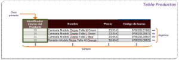
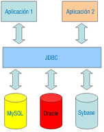
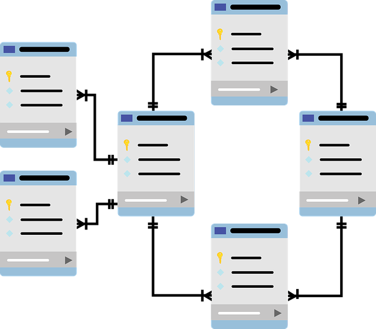
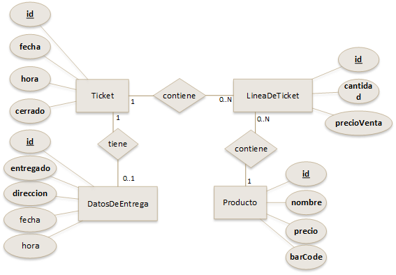
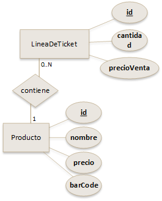

Gestión de bases de datos
Gestión de bases de datos: relacionales y orientadas a objetos. Persistencia de objetos
Caso práctico

Ada ha asignado un proyecto a María y a Juan. Se trata de un proyecto importante, puede suponer muchas ventas, y por tanto una gran expansión para la empresa.
En concreto, una cadena de tiendas a nivel nacional se ha puesto en contacto con BK programación para decirles que necesitan un programa que sustituya al actual software que utilizan para los puntos de venta. El nuevo software tendrá unas características especiales, todavía por determinar. Este es un proyecto que si sale adelante será de largo recorrido, dado que no solo requerirá el desarrollo, sino también el mantenimiento y mejora del mismo a lo largo de los años. Podría ser trabajo asegurado para la empresa durante mucho tiempo.
De momento Ada les ha pedido a María y a Juan que se pongan a estudiar cómo es ese tipo de software y a prepararse para la tarea que está por venir. Ambos saben que una cuestión vital en una aplicación como esta es el almacenamiento de los datos: productos, tiques, movimientos de caja, entrada de productos, etc.
Como en BK programación trabajan sobre todo con Java, desde el primer momento Juan y María tienen claro que van a tener que utilizar Bases de Datos. Su idea ahora es explorar y experimentar, y para ello tienen pensado crear una aplicación sencilla de punto de venta que van a denominar "mini pos".

¿Te imaginas una aplicación donde no se pudieran guardar los datos?
Casi todos los programas hoy día tienen la opción de guardar los datos con los que se trabaja.
Hasta ahora, ya conoces cómo abrir un archivo y utilizarlo como “almacén” para los datos que maneja tu aplicación. Utilizar un archivo para almacenar datos es la forma más sencilla de persistencia, porque en definitiva, la persistencia es hacer que los datos perduren en el tiempo.
Hay muchas formas de hacer los datos de una aplicación persistentes, y muchos niveles de persistencia. Cuando los datos de la aplicación solo están disponibles mientras la aplicación se está ejecutando, tenemos un nivel de persistencia muy bajo.
Es deseable que los datos de nuestra aplicación tengan el mayor nivel de persistencia posible.
Tendremos un mayor nivel de persistencia si los datos “sobreviven” a varias ejecuciones, o lo que es lo mismo, si nuestros datos se guardan y luego son reutilizables con posterioridad. Tendremos un nivel todavía mayor si “sobreviven” a varias versiones de la aplicación, es decir, si guardo los datos con la versión 1.0 de la aplicación y luego puedo utilizarlos cuando esté disponible la versión 2.0.
Ya hemos visto varias formas de hacer los datos de una aplicación persistentes, mediante ficheros, en una unidad anterior. Ahora, en esta unidad, vamos a ver cómo pueden persistir los datos en una base de datos, explorando dos técnicas diferentes:
- Almacenando los datos en una base de datos relacional.
- Usando técnicas más avanzadas de persistencia de objetos.
1.- Bases de datos relacionales
Caso práctico

María y Juan han empezado a darle vueltas a la aplicación que quieren hacer para practicar, y lo primero que piensan es:
¿Dónde almacenaremos los datos de nuestro mini punto de venta?
Saben que la persistencia de los datos es sumamente importante y claro, tal y como ya aprendieron en el módulo de Bases de Datos, uno de los mecanismos más habituales es usar una Base de Datos relacional.
Diseñar una base de datos relacional de forma adecuada es importante, y requiere paciencia y técnica. Pero por ahora simplemente van a desarrollar una aplicación de prueba, para experimentar, así que aunque lo tienen en cuenta, tampoco lo van a tomar a rajatabla.

Hoy en día, la mayoría de aplicaciones informáticas necesitan almacenar y gestionar gran cantidad de datos.
Esos datos, se suelen guardar en bases de datos relacionales, ya que éstas son las más extendidas actualmente.
Las bases de datos relacionales permiten organizar los datos en tablas y esas tablas y datos se relacionan mediante campos clave. Además se trabaja con el lenguaje estándar conocido como SQL, para poder realizar las consultas que deseemos a la base de datos.
Una tabla es una serie de filas y columnas, en la que cada fila es un registro y cada columna es un campo. Un campo representa un dato de los elementos almacenados en la tabla (nombre del producto, precio, código de barras, etc.). Cada registro, compuesto por tanto por varios campos, representa un elemento de la tabla (un modelo concreto de camiseta, un modelo concreto de pantalón, etc.)
Desde un punto de vista formal, en una tabla no debería haber nunca dos registros iguales (no debería aparecer dos veces, por ejemplo, el mismo modelo de camiseta). Por ello, las tablas deben tener una clave primaria. La clave primaria estaría formada por uno o más campos cuyos valores no se pueden repetir en otras filas de la tabla. Ejemplos de claves primarias serían: código de barras para una tabla de productos, número de bastidor para una tabla de coches o número de la seguridad social para una tabla de personas.
El sistema gestor de bases de datos, en inglés conocido como: Database Management System (DBMS), gestiona el modo en que los datos se almacenan, mantienen y recuperan.
En el caso de una base de datos relacional, el sistema gestor de base de datos se denomina: Relational Database Management System (RDBMS), que podríamos traducir por Sistema Gestor de Bases de Datos Relacionales.
Tradicionalmente, la programación de bases de datos ha sido como una Torre de Babel: gran cantidad de productos de bases de datos en el mercado, y cada uno "hablando" en su lenguaje privado con las aplicaciones.
Java, mediante JDBC (Java Database Connectivity), permite simplificar el acceso a base de datos relacionales, proporcionando un único mecanismo mediante el cual las aplicaciones pueden comunicarse con motores de bases de datos. La empresa Sun desarrolló esta API para el acceso a bases de datos, con tres objetivos principales en mente:
- Ser un API con soporte de SQL: poder construir sentencias SQL e insertarlas dentro de llamadas a la API de Java.
- Aprovechar la experiencia de las API de Bases de Datos existentes.
- Ser sencillo.
Es el atributo que se elige como identificador en una tabla, de manera que no haya dos registros iguales, sino que se diferencien al menos en esa clave. Por ejemplo, en el caso de una tabla que guarda datos de personas, el número de la seguridad social, podría elegirse como clave primaria, ya que aunque haya dos personas que se llamen igual, (por ejemplo, dos Juan Pérez Pérez), tenemos la certeza de que su número de seguridad social será distinto.
API que permite la ejecución de operaciones sobre bases de datos desde el lenguaje de programación Java, independientemente del sistema operativo donde se ejecute o de la base de datos a la cual se accede.
Autoevaluación
Retroalimentación
Verdadero
JBDC sirve para acceder a bases de datos relacionales con Java.
Para saber más
Si necesitas refrescar o simplemente aprender el concepto de clave primaria, en la Wikipedia puedes consultarlo.
1.1.- El desfase objeto-relacional

El desfase objeto-relacional, también conocido como impedancia objeto-relacional, consiste en la diferencia de aspectos que existen entre la programación orientada a objetos y la base de datos. Estos aspectos se puede presentar en cuestiones como:
- Lenguaje de programación: el programador debe conocer el lenguaje de programación orientada a objetos (POO) y el lenguaje de acceso a datos.
- Tipos de datos: en las bases de datos relacionales siempre hay restricciones en cuanto a los tipos de datos que se pueden usar, que suelen ser sencillos, mientras que la programación orientada a objetos utiliza tipos de datos más complejos.
- Paradigma de programación: en el proceso de diseño y construcción del software se tiene que hacer una traducción del modelo orientado a objetos de clases al modelo Entidad-Relación (E/R) puesto que el primero maneja objetos y el segundo maneja tablas y tuplas o filas, lo que implica que se tengan que diseñar dos diagramas diferentes para el diseño de la aplicación.
El modelo relacional trata con relaciones y conjuntos debido a su naturaleza matemática. Sin embargo, el modelo de Programación Orientada a Objetos trata con objetos y las asociaciones entre ellos. Por esta razón, el problema entre estos dos modelos surge en el momento de querer hacer persistentes en la base de datos los objetos de negocio que maneja la aplicación.
La escritura (y de manera similar la lectura) mediante JDBC implica: abrir una conexión, crear una sentencia en SQL y copiar todos los valores de las propiedades o atributos de un objeto en la sentencia, ejecutarla y así almacenar el objeto. Esto es sencillo para un caso simple, pero trabajoso si el objeto posee muchas propiedades, o bien si se necesita almacenar un objeto que a su vez posee una colección de otros elementos que también son objetos. Se necesita crear mucho más código, además del tedioso trabajo de creación de sentencias SQL.
Este problema es lo que denominábamos impedancia Objeto-Relacional, o sea, el conjunto de dificultades técnicas que surgen cuando una base de datos relacional se usa en asociación con un programa escrito en un lenguajes de Programación Orientada a Objetos.
Podemos poner como ejemplo de desfase objeto-relacional, un equipo de fútbol, que tenga un atributo que sea una colección de objetos de la clase Jugador. Cada jugador tiene un atributo "teléfono". Al transformar este caso a relacional se ocuparía más de una tabla para almacenar la información, implicando varias sentencias SQL y bastante código.
Es una propuesta tecnológica, un modelo, que se adopta por una comunidad de programadores que unívocamente trata de resolver uno o varios problemas claramente delimitados. Tiene una estrecha relación con la formalización de determinados lenguajes en su momento de definición. Un paradigma de programación está delimitado en el tiempo en cuanto a aceptación y uso, ya que nuevos paradigmas aportan nuevas o mejores soluciones que sustituyen esa propuesta tecnológica parcial o totalmente.
Debes conocer
Si no has estudiado nunca bases de datos, ni tienes idea de qué es SQL o el modelo relacional, sería conveniente que te familiarizaras con él. A continuación te indicamos un tutorial bastante ameno sobre SQL y que describe brevemente el modelo relacional.
1.2.- JDBC
- Consta de un conjunto de clases e interfaces escritas en Java.
- Proporciona un API estándar para desarrollar aplicaciones que usen bases de datos. De esa forma, siempre usarás las mismas clases y métodos para almacenar datos en la base de datos, independientemente de la base de datos.
Con JDBC, no hay que usar mecanismos diferentes para almacenar datos en una base de datos Access, o para almacenar datos en una base de datos Oracle, etc., sino que podemos hacer uso del mismo conjunto de técnicas para usar cualquier base de datos relacional. Gracias a la API JDBC, ejecutar consultas SQL en una base de datos o en otra será algo transparente para el programador.
Cuando se desarrolló JDBC, y debido a la confusión que hubo por la proliferación de API propietarias de acceso a datos, Sun buscó los aspectos de éxito de una API de este tipo, y el ejemplo a seguir fue ODBC (Open Database Connectivity).
ODBC se desarrolló con la idea de tener un estándar para el acceso a bases de datos en entornos Windows. Aunque la industria ha aceptado ODBC como medio principal para acceso a bases de datos en Windows, ODBC no se adapta bien en el mundo Java, debido a la complejidad que presenta. Factor que junto a otras cosas ha impedido su transición fuera de entornos Windows.
El nivel de abstracción al que trabaja JDBC es alto en comparación con ODBC, la intención de Sun fue que supusiera la base de partida para crear librerías de más alto nivel.
JDBC intenta ser tan simple como sea posible, pero proporcionando a los desarrolladores la máxima flexibilidad.
Es una API de acceso a datos, desarrollado por Microsoft, con la idea de tener un estándar para el acceso a bases de datos en entornos Windows.
Uno de los objetivos fundamentales de una base de datos es proporcionar a los usuarios una visión abstracta de los datos. Es decir, el sistema oculta ciertos detalles relativos a la forma en que se almacenan y mantienen los datos. Esto se logra definiendo tres niveles de abstracción en los que puede considerarse la base de datos: físico, conceptual y de visión.
Autoevaluación
Retroalimentación
Falso
ODBC se desarrolló para ser un estándar para el acceso a bases de datos en entornos Windows, y JDBC pretendió recoger esta idea para construir una API genérica independiente de la plataforma.
1.3.- Conectores o Drivers

La API JDBC viene distribuida en dos paquetes dentro de Java SE:
java.sql, contiene las clases e interfaces principales de la API, y su propósito es facilitar el acceso y procesamiento de datos provenientes de diversas fuentes (generalmente bases de datos relacionales).javax.sql, contiene clases que complementan a las incluidas enjava.sql, y aunque está destinado a facilitar el acceso a fuentes de datos en el entorno de servidor, está incluido en Java SE desde la versión 1.4.
Aunque JDBC contiene un buen conjunto de clases, este no es suficiente para poder conectarse y usar una base de datos relacional. Para conectarnos a una base de datos específica, JDBC necesita un conector o driver adicional. JDBC es a su vez una especificación que indica cómo debe implementarse dicho conector.
Un conector JDBC es un conjunto de clases que implementan las interfaces de la API JDBC necesarias para conectar a una base de datos específica.
La función del conector es permitir el acceso y la comunicación con el motor de base de datos.
El conector es generalmente implementado por el fabricante del SGBD y consta de una o más librerías java (archivos .jar) que deberemos incorporar a nuestro proyecto.
Cuando se construye una aplicación que accede a una base de datos, JDBC oculta los detalles específicos de cada base de datos, de modo que al programar nos debemos preocupar sólo de nuestra aplicación.
Por tanto, aunque el código de nuestra aplicación no depende del driver o conector, puesto que trabajaremos directamente con los paquetes java.sql y javax.sql, para ejecutar nuestra aplicación y que esta pueda conectarse y usar la base de datos, sí que vamos a necesitar el conector que nos proporcionará el fabricante.
Como se verá más adelante, de cara al desarrollo de nuestra aplicación, JDBC nos ofrece clases e interfaces para:
- Establecer una conexión a una base de datos.
- Ejecutar una consulta.
- Procesar los resultados.
Vamos a ver un pequeño ejemplo de las clases que tendríamos que usar para ejecutar una consulta usando JDBC, échale un vistazo al código, no te preocupes si todavía no lo entiendes todo, más adelante veremos algunas cosas en mayor profundidad:
//URL de conexión
String connectionURL = "jdbc:h2:./minipos.h2db;MODE=MySQL;AUTO_RECONNECT=TRUE";
//Usuario para conectar a la base de datos (rellenar si es necesario).
String usuario = "";
//Contraseña para conectar a la base de datos (rellenar si es necesario).
String password = "";
//Paso 1: conectamos con la base de datos
try ( Connection con = DriverManager.getConnection(connectionURL, usuario, password)) {
//Paso 2: crear y ejecutar una consulta
try ( Statement consulta = con.createStatement()) {
if (consulta.execute("SELECT id,nombre,precio FROM producto")) {
ResultSet resultados = consulta.getResultSet();
while (resultados.next()) {
long id = resultados.getLong("id");
String nombre = resultados.getString("nombre");
double precio = resultados.getDouble("precio");
System.out.printf("%5d %-15s %10.2f\n", id, nombre, precio);
}
}
} catch (SQLException ex) {
System.err.printf("Se ha producido un error al ejecutar la consulta SQL.");
}
} catch (SQLException ex) {
System.err.printf("No se pudo conectar a la base de datos (%s)\n");
}En principio, todos los conectores deben ser compatibles con ANSI SQL-2 Entry Level (ANSI SQL-2 se refiere a los estándares adoptados por el American National Standards Institute (ANSI) en 1992. Entry Level se refiere a una lista específica de capacidades de SQL). Los desarrolladores de conectores pueden establecer que sus conectores conocen estos estándares.
Para saber más
Si necesitas acceder a una base de datos con Java, necesitas un controlador o driver JDBC. Esta es una lista de los controladores disponibles, a qué base de datos pueden acceder, y quién la crea.
1.4.- Instalación de la base de datos
Caso práctico

María y Juan tienen claro que los datos de la aplicación que tendrán que programar deberán almacenarse en una base de datos. En su proyecto de prueba han estado valorando diferentes sistemas gestores de bases de datos, cada uno por su cuenta, y ahora, van a ponerlos en común:
—Juan, he estado mirando diferentes opciones para nuestro proyecto de prueba —comenta María—. Podríamos utilizar alguna base de datos de las que ya hemos visto en el ciclo. ¿Qué piensas de MySQL o PostgreSQL?
—Yo he valorado también esas dos bases de datos, pero después de darle vueltas al asunto, pienso que instalar un sistema gestor de base de datos para realizar un proyecto de prueba es excesivo. Tampoco sabemos que base de datos utilizaremos finalmente —responde Juan.
—¿Y qué solución propones entonces?
—No lo sé, creo que quizás sería mejor preguntarle a Ada, a lo mejor ella nos puede orientar.
Después de un ratito hablando con Ada tienen las cosas más claras. Les ha propuesto que utilicen H2 para realizar su proyecto de prueba, una base de datos muy ligera que se usa principalmente a la hora de desarrollar. Pero eso sí, deben tener en mente que el proyecto del cliente se hará sobre MySQL.

¿Qué es lo primero que tenemos que hacer, para poder realizar consultas en una base de datos?
Obviamente, instalar la base de datos.
Dada la cantidad de productos de este tipo que hay en el mercado, es imposible explicar la instalación de todas. Así que vamos a optar por una, en concreto por MySQL, ya que es un sistema gestor de base de datos gratuito y que funciona en varias plataformas.
Para instalar MySQL en Windows puedes seguir los pasos que te detallamos en la siguiente presentación, descargando el instalador de la página oficial:
Si utilizas Linux, el sitio de descarga es el mismo que el indicado en el vídeo anterior, y la instalación la puedes hacer con los pasos que te indican en el enlace siguiente:
Debes conocer
Aparte de MySQL, también te proponemos probar con una base de datos que no necesita instalación. Se trata de H2 y es una base de datos relacional embebida compatible con MySQL. ¿Y eso que quiere decir? Quiere decir que lo único que hay que hacer para utilizar H2 es añadir a nuestro proyecto la librería de H2 (archivo .jar), no requiere por tanto instalación dado que la librería va incorporada en nuestro mismo código:
En la página anterior encontrarás muchas descargas, pero la única que realmente necesitarás será el archivo .jar (Jar File). H2 es software libre y es una base de datos ligera muy usada en la fase de desarrollo. Cuando ya se tiene un producto viable, normalmente se sustituye por una base de datos más potente. A continuación tienes un proyecto base para NetBeans que ya incorpora H2, listo para usar.
Proyecto base para NetBeans que utiliza H2 (zip - 2.14 MB).
Si abres el proyecto anterior, verás que incluye código para crear la estructura de la base de datos y un ejemplo de consulta visto en apartados anteriores.
Para saber más
De MySQL se escindieron otras bases de datos, como MariaDB y Percona, que cada vez están teniendo mayor número de seguidores.
En el siguiente enlace puedes obtener información sobre MariaDB

Autoevaluación
Retroalimentación
Verdadero
De no ser así será imposible conectarnos a la base de datos.
1.5.- Creación de las tablas en una base de datos
Caso práctico

María y Juan han realizado el diseño de las tablas que necesitan para la base de datos del mini punto de venta. De momento incluye solo tres tablas: producto, ticket y línea de ticket; con unos pocos atributos, pero piensan hacerlo evolucionar. El aspecto que tiene ahora mismo es el que se muestra en el esquema entidad-relación de la derecha.
También han decidido utilizar H2 como sistema gestor de bases de datos para las pruebas, con la mente puesta en que luego tendrán que usar MySQL.
Saben que H2 es un sistema gestor de bases de datos relacional. Una vez instalado, tendrán que programar los accesos a la base de datos para guardar los datos, recuperarlos, realizar las consultas para los informes y documentos que sean necesarios, etc.

En Java podemos conectarnos y manipular bases de datos utilizando JDBC. Pero la creación en sí de la estructura de la base de datos normalmente es necesario hacerla con una herramienta específica para ello. Normalmente será el administrador o la administradora de la base de datos, a través de las herramientas que proporcionan el sistema gestor, quien creará la base de datos. No todos los drivers JDBC soportan la creación de la base de datos mediante el lenguaje de definición de datos (DDL).
Normalmente, cualquier sistema gestor de bases de datos incluye asistentes gráficos para crear la base de datos con sus tablas, claves, y todo lo necesario.
También, como en el caso de MySQL, o de Oracle, y la mayoría de sistemas gestores de bases de datos, se puede crear la base de datos, desde la línea de comandos de MySQL o de Oracle, con las sentencias SQL apropiadas.
Vamos utilizar el sistema gestor de base de datos MySQL, por ser un producto gratuito y de fácil uso, además de muy potente. También vamos a utilizar la base de datos H2 por ser software libre y compatible con MySQL.
Una clave consiste en un subconjunto del conjunto de atributos comunes en una colección de entidades, que permite identificar unívocamente cada una de las entidades pertenecientes a dicha colección.
Es un método que permite a los usuarios dar instrucciones a algún programa informático por medio de una línea de texto simple.
Debes conocer
Una de las herramientas más usadas para crear esquemas de bases de datos en MySQL es MySQL WorkBench. En la siguiente presentación puedes ver como se crearía con MySQL WorkBench una tabla llamada clientes:
Debes conocer
Aunque en H2 puedes crear las tablas desde JDBC, si lo necesitas H2 dispone de una consola web donde ejecutar sentencias SQL. En el siguiente documento puedes ver cómo arrancar dicha consola, es muy sencillo:
Resumen de como iniciar la consola de H2 (pdf - 58.25 KB).
No obstante, en el proyecto base expuesto en apartados anteriores, puedes ver como se pueden crear tablas desde H2.
Para saber más
Aquí puedes ver un vídeo sobre la instalación de la base de datos Oracle Express y creación de tablas.
1.5.1.- Lenguaje SQL (I)
¿Cómo le pedimos al Sistema Gestor de Bases de Datos Relacional (SGBDR) que nos proporcione la información que nos interesa de la base de datos?
En todas o casi todas las bases de datos relacionales se utiliza el lenguaje SQL para interactuar con el SGBDR. Veamos sus características principales.
SQL es un lenguaje no procedimental en el cual se le indica al SGBDR qué queremos obtener y no cómo hacerlo. El SGBDR analiza nuestra orden y si es correcta sintácticamente la ejecuta.
El estudio de SQL nos llevaría mucho más que una unidad, y es objeto de estudio en otros módulos de este ciclo formativo. Pero como resulta imprescindible para poder continuar, haremos una mínima introducción sobre él.
Los comandos SQL se pueden dividir en dos grandes grupos:
- Los que se utilizan para definir las estructuras de datos, llamados comandos DDL (Data Definition Language).
- Los que se utilizan para operar con los datos almacenados en las estructuras, llamados DML (Data Manipulation Language).
En la siguiente presentación encontrarás algunos de los comandos SQL más utilizados.sencillo:
Resumen de comandos SQL (pdf - 215323 B)
Para saber más
En este enlace encontrarás de una manera breve pero interesante la historia de SQL
Autoevaluación
Retroalimentación
Falso
Basta con decirle qué datos queremos y el sistema gestor se encarga de obtenerlos.
1.5.2.- Lenguaje SQL (II)
La primera fase del trabajo con cualquier base de datos comienza con sentencias DDL, puesto que antes de poder almacenar y recuperar información debemos definir las estructuras donde agrupar la información. Las estructuras básicas con las que trabaja SQL son las tablas.
Como hemos visto antes, una tabla es un conjunto de celdas agrupadas en filas y columnas donde se almacenan elementos de información.
Antes de llevar a cabo la creación de una tabla conviene planificar: nombre de la tabla, nombre de cada columna, tipo y tamaño de los datos almacenados en cada columna, información adicional, restricciones, etc.
Hay que tener en cuenta también ciertas restricciones en la formación de los nombres de las tablas: longitud. Normalmente, aunque dependen del sistema gestor, suele tener una longitud máxima de 30 caracteres, no puede haber nombres de tabla duplicados, deben comenzar con un carácter alfabético, permitir caracteres alfanuméricos y el guión bajo '_', y normalmente no se distingue entre mayúsculas y minúsculas.
Veamos cómo sería un ejemplo de DDL para crear una tabla, concretamente la tabla PRODUCTO del mini punto de venta:
CREATE TABLE IF NOT EXISTS PRODUCTO(
ID BIGINT NOT NULL PRIMARY KEY auto_increment,
BARCODE VARCHAR(24) NOT NULL,
NOMBRE VARCHAR(200) NOT NULL,
PRECIO DOUBLE NOT NULL
);En el ejemplo anterior creamos la tabla PRODUCTO, solo si no existe previamente, además el campo ID sería la clave primaria (PRIMARY KEY). El campo ID además es autoincremental, es decir, es una secuencia que cada vez que se inserte un registro se incrementará automáticamente, algo muy habitual en las bases de datos.
Pongamos ahora otro ejemplo, también relacionado con el mini punto de venta. En este caso, sería la tabla que contendría los tickets:
CREATE TABLE IF NOT EXISTS TICKET (
ID BIGINT NOT NULL PRIMARY KEY auto_increment,
FECHA DATE NOT NULL,
HORA TIME NOT NULL,
TICKETCERRADO BOOLEAN NOT NULL
);En la tabla anterior, la clave primaria es igual que en la tabla PRODUCTO. Aparece información sobre la fecha y la hora del ticket, y un boolean que indicará si el ticket está cerrado o no.
Por último veamos como podría ser la última tabla del mini punto de venta, la tabla LINEATICKET:
CREATE TABLE IF NOT EXISTS LINEATICKET(
ID BIGINT NOT NULL PRIMARY KEY auto_increment,
CANTIDAD INTEGER NOT NULL,
PRECIOVENTA DOUBLE NOT NULL,
PRODUCTO_ID BIGINT,
TICKET_ID BIGINT,
FOREIGN KEY(PRODUCTO_ID) REFERENCES PUBLIC.PRODUCTO(ID) ON UPDATE CASCADE ON DELETE CASCADE,
FOREIGN KEY(TICKET_ID) REFERENCES PUBLIC.TICKET(ID) ON UPDATE CASCADE ON DELETE CASCADE
);
La tabla LINEATICKET contiene cada una de las líneas del ticket; como ya sabes, un ticket puede contener varios productos. Los campos PRODUCTO_ID y TICKET_ID conectarán esta línea de ticket con el ticket al que pertenece y con el producto en cuestión.
Como habrás observado en las tablas anteriores, cada campo tiene asociado un tipo de dato: INTEGER, BIGINT, DATE, TIME, BOOLEAN, VARCHAR, etc. A la hora de almacenar dicha información en Java, tendrás que tener en cuenta las siguientes equivalencias:
- El tipo de dato
INTEGERen SQL equivaldría al tipointen Java. - El tipo de dato
BIGINTen SQL equivaldría al tipolongen Java. - El tipo de dato
DOUBLEen SQL equivaldría al tipodoubleen Java. - El tipo de dato
VARCHARen SQL equivaldría al tipoStringen Java, pero tienes que tener en cuenta queVARCHARtiene un tamaño limitado, mientras que unStringno. Por ejemplo,"VARCHAR(30)"sería una cadena de hasta 30 caracteres. Así, que a la hora de insertar datos en una base de datos relacional, debes tener en cuenta que la longitud delStringen Java no debería superar al tamaño límite delVARCHARen la base de datos. - El tipo de dato
DATEen SQL equivaldría al tipojava.sql.Date(no debe usarsejava.util.Datenijava.time.LocalDate).java.sql.Datepuede convertirse rápidamente ajava.time.LocalDate. - El tipo de dato
TIMEen SQL equivaldría al tipojava.sql.Time(no debe usarsejava.util.Timenijava.time.LocalTime). Nuevamente,java.sql.Timepuede convertirse rápidamente ajava.time.LocalTime.
Reflexiona
En la tabla PRODUCTO la clave primaria es el atributo ID, sin embargo, el código de barras parece una buena clave primaria. ¿Por qué crees que se ha decidido usar el atributo ID como clave primaria y no el código de barras?
Reflexiona
En la tabla LINEATICKET se almacena el precio de venta del producto, pero dicho precio ya está en la tabla PRODUCTO. ¿Por qué crees que se duplica dicho valor?
Para saber más
En la siguiente página de la documentación de MySQL puedes ver una tabla completa de equivalencias de tipos de datos en la base de datos y tipos de datos Java:
1.6.- Establecimiento de conexiones
Caso práctico

Tanto Juan como María están deseando empezar a trabajar en su proyecto de mini punto de venta, ya tienen pensadas las tablas y ahora toca empezar a escribir código. Saben que usar bases de datos relacionales en Java es sencillo, pero aún así tienen algunas dudas, por lo que deciden preguntarle a Ada.
¿Cómo se crea una conexión a la base de datos? —pregunta Juan—. Estoy intentando ejecutar una consulta usando lo que he visto en un tutorial en Internet, y no consigo que se conecte, me falla en la primera línea.
—Primero tienes que cargar el conector —le responde Ada—. ¿Has configurado en tu proyecto las librerías del conector JDBC? Para conectarte a una base de datos como MySQL u Oracle desde tu programa necesitas el conector.
—Estamos usando H2 para nuestras pruebas, que va todo incluido en el archivo .jar —replica María.
—Es verdad, no me acordaba —contesta Ada—. El problema entonces debe estar en que no habéis realizado la conexión previamente, vamos a echarle un vistazo al código. No obstante, no olvidéis que en el proyecto habrá que usar una base de datos más potente, revisad también como conectaros con una base de datos como MySQL.
Cuando queremos acceder a una base de datos para operar con ella, necesitamos que el conector JDBC esté configurado en nuestro proyecto a dos niveles:
- En un primer nivel es necesario añadir el conector JDBC (la librería
.jar) en nuestro proyecto para poder desarrollar la aplicación, sin esa dependencia no podremos probar el código que estamos desarrollando. - En un segundo nivel, si estamos trabajando con una versión anterior a JDBC 4.0, es necesario registrar el conector JDBC antes de iniciar la conexión.
Una vez que hemos tenido en cuenta los aspectos anteriores, para establecer una conexión con una base de datos debemos utilizar el método getConnection() de la clase DriverManager. Este método recibe como parámetro la URL de JDBC que identifica a la base de datos con la que queremos realizar la conexión.
Un ejemplo de URL de conexión sería el siguiente:
jdbc:mysql://localhost/proyectobase?serverTimezone=UTC&useUnicode=true&characterEncoding=utf8En la URL anterior hay varias partes importantes, separadas por ":". Veamos cuáles son:
jdbcindica que se trata de una URL que contiene la información para conectar usando JDBC.mysqlindica que se trata de una conexión a una base de datos MySQL.- La siguiente sección tiene dos partes:
- Servidor y base de datos con la que se desea conectar:
//localhost/proyectobase. En ese ejemplo el servidor estaría instalado en la máquina local (localhost) y la base de datos se llamaríaproyectobase. - Después, hay una serie de parámetros para el conector:
?serverTimezone=UTC&useUnicode=true&characterEncoding=utf8. En este caso, esos drivers indican tres cosas: que el servidor debe considerar que se usará la zona horaria de europa occicental (serverTimezone=UTC) y que se utilizará Unicode para el texto almacenado (useUnicode=trueycharacterEncoding=utf8).
- Servidor y base de datos con la que se desea conectar:
Ese es un ejemplo de URL. Si usamos otra base de datos, la URL será diferente. Esa URL se proporcionará al método getConnection para efectuar la conexión, junto con otra información que pueda ser necesaria:
String url="jdbc:mysql://localhost/proyectobase?serverTimezone=UTC&useUnicode=true&characterEncoding=utf8";
String usuario="prueba";
String password="prueba";
Connection con = DriverManager.getConnection(url,usuario,password); //Establecer la conexión
/* Resto del código */
if (con!=null) con.close(); //Cerrar la conexiónFíjate que en el ejemplo anterior, aparte de la URL de conexión, se le proporciona el usuario y la contraseña para acceder a la base de datos.
La ejecución de este método devuelve un objeto Connection que representa la conexión con la base de datos, no debes olvidar cerrar la conexión cuando ya no sea necesaria.
Pero el ejemplo anterior está incompleto. Tienes que tener en cuenta que cuando se encuentra con una URL específica, DriverManager itera sobre la colección de drivers registrados hasta que uno de ellos reconoce la URL especificada. Si no se encuentra ningún driver adecuado, se lanza una SQLException.
Veamos un ejemplo completo de conexión con una base de datos, donde dicha excepción se trata correctamente:
String url="jdbc:mysql://localhost/proyectobase?serverTimezone=UTC&useUnicode=true&characterEncoding=utf8";
String usuario="prueba";
String password="prueba";
try (Connection con = DriverManager.getConnection(url,usuario,password)) {
/* Consultas a la base de datos. */
} catch (SQLException ex) {
err.printf("No se pudo conectar a la base de datos (%s)\n", dbname);
ex.printStackTrace();
}1.6.1.- Configurar un conector JDBC en un proyecto NetBeans
En la siguiente presentación vamos a ver cómo descargarnos el conector o driver que necesitamos para trabajar con MySQL. Como verás, tan sólo consiste en descargar un archivo, descomprimirlo y desde NetBeans añadir el fichero .jar que constituye el conector que necesitamos.
Recuerda que el conector JDBC es un componente que se intercala entre el programa Java y el Sistema Gestor de la Base de Datos (SGBD), y que implementa la funcionalidad necesaria para proporcionar comunicación entre la API JDBC y el SGBD.
Autoevaluación
Retroalimentación
Verdadero
En efecto getConnection() se utiliza para conectarnos a una base de datos.
Ejercicio Resuelto
¿Te atreverías a crear un proyecto NetBeans que incorpore el conector JDBC para MySQL? Seguro que sabes hacerlo.
1.6.2.- Registrar el conector JDBC
A la hora de empezar a escribir código, ¿sabes si necesitas registrar el conector JDBC? Como se comentó en apartados anteriores, es necesario registrar el conector JDBC si estamos trabajando con una versión de JDBC anterior a la 4.0.
En la práctica, es fácil saber cuándo tienes que registrar el conector, dado que solo las versiones anteriores a 1.6 del JDK tienen una versión de JDBC inferior a la 4.0. Esto quiere decir que:
Solo tienes que registrar el conector si vas a usar un JDK anterior a 1.6. Versiones actuales como JDK 1.7, JDK 8 y posteriores, no necesitan registrar el conector, pero como se verá a continuación es una buena práctica.
Para registrar el controlador primero, hay que consultar la documentación del conector que vamos a utilizar para conocer el nombre de la clase que hay que emplear, dado que cada conector es diferente.
En el caso del conector para MySQL la clase en cuestión es com.mysql.cj.jdbc.Driver. Se trata de una clase que implementa la interfaz java.sql.Driver definida por JDBC, y que es la interfaz que todo conector debe implementar. Dicha clase ya compilada se encontrará obviamente dentro de la librería .jar que instalamos en el paso anterior.
Las líneas de código necesarias para registrar el conector son tan sencillas como las siguientes:
boolean driverCargado=false;
String driver="com.mysql.cj.jdbc.Driver";
try {
Class.forName(driver).newInstance();
driverCargado=true;
} catch (ClassNotFoundException e) {
err.printf("No se encuentra el driver de la base de datos (%s)\n",driver);
} catch (InstantiationException ex) {
err.printf("No se ha podido iniciar el driver de la base de datos (%s)\n",driver);
} catch (IllegalAccessException ex) {
err.printf("No se ha podido iniciar el driver de la base de datos (%s)\n",driver);
}
if (driverCargado) {
// podemos continuar, el driver se ha cargado correctamente
}Una vez cargado el conector, es posible hacer una conexión al SGBD. Fíjate que el proceso de carga puede producir hasta tres tipos de excepciones diferentes, hay que tener especial cuidado con eso, dado que el programa no debería continuar en caso de que dichas excepciones se produjeran.
Por último, toca hablar un poco de la distribución de la aplicación al cliente final. Los proyectos que hemos creado hasta ahora, donde hemos incluido la librería del conector al proyecto para poder desarrollar y probar nuestra aplicación, no generan proyectos listos para ejecutar en un cliente final. ¿Por qué? Por que el archivo .jar generado para nuestra aplicación no incluye en su interior el conector.
¿Y esto que significa? Significa que debemos copiar también el conector JDBC en la máquina del cliente como parte del proceso de instalación. Como parte del proceso de instalación debemos, o bien añadir al CLASSPATH la localización del archivo .jar del conector, o bien indicar a la hora de ejecutar la aplicación donde está el archivo .jar del conector. Un ejemplo de esto último sería el siguiente:
java -cp UT10_ProyectoBaseMySQL.jar;librerias\mysql-connector-java-8.0.20.jar ejemplo.AplicacionEn el código anterior el conector estaría en una carpeta llamada librerias.
Aunque el proceso de registro del conector no es necesario en muchos casos, es una buena práctica por dos motivos:
- El primero es por asegurar compatibilidad con versiones anteriores del JDK, dado que en muchas ocasiones no sabemos que versión del JDK se usará en el cliente final.
- El segundo es para controlar situaciones como la anterior. Si al ejecutar la aplicación en el cliente no se encuentra el conector, porque no se ha configurado bien el
CLASSPATHo porque al ejecutar la aplicación no se ha indicado donde está la librería del conector, podremos mostrar por pantalla un mensaje amigable y evitar así una incómoda excepción.
Ejercicio Resuelto
¿Cómo sería el código necesario para registrar el conector JDBC para la base de datos H2? Seguro que sabes hacerlo, consulta primero la documentación de H2 para hacerlo:
1.7.- Ejecución de consultas sobre la base de datos
Caso práctico
Ada está muy satisfecha con el interés que Juan y María han puesto y el empeño en empezar a utilizar una tecnología que en breve van a usar. Los ve que están enfrascados en la creación de consultas para gestionar los productos, los tickets y demás.
Ada es consciente de que hacer consultas es una de las facetas de la programación más delicadas. Por lo que, dada la importancia del proyecto, cuanto antes avancen y mejoren sus destrezas en ese aspecto, mucho mejor.
María y Juan tienen experiencia en consultas SQL y saben que, cuando se hace una consulta a una base de datos, hay que afinar y hacerla lo más eficiente posible, pues si se descuidan el sistema gestor puede tardar mucho en devolver los resultados.
Ada se acerca discretamente a ver lo que está haciendo María, y se da cuenta de que está escribiendo código para crear tickets. Prefiere no molestarla, dado que parece muy concentrada.
¿Crees que será sencillo ejecutar una consulta a través de JDBC? Es más fácil de lo que parece.
Antes de continuar, repasemos lo que ya sabemos hasta ahora. Para operar con una base de datos y ejecutar las consultas necesarias, nuestra aplicación deberá hacer las operaciones siguientes:
- Registrar el conector.
- Establecer una conexión con la base de datos.
- Enviar consultas SQL y procesar el resultado.
- Liberar los recursos al terminar.
- Gestionar los errores que se puedan producir.
Bien, una vez repasado lo anterior lo primero que debes saber es que JDBC proporciona tres modelos de sentencias:
Statement: para lanzar consultas sencillas en SQL.PreparedStatement: para lanzar consultas preparadas, es decir, consultas que tienen parámetros.CallableStatement: para lanzar la ejecución de procedimientos almacenados en la base de datos.
Además, tienes que tener en cuenta que la API JDBC distingue dos tipos de consultas:
- Consultas que permiten obtener datos almacenados:
SELECT. Para las consultas tipoSELECT, que obtienen datos de la base de datos, se emplea el métodoResultSet executeQuery(String sql). El método anterior retorna un objeto de tipoResultSet, el cual permitirá acceder a los datos resultantes de la ejecución de la consulta para su procesamiento. - Consultas que permiten cambiar los datos almacenados: entre esas consultas tenemos
INSERT, UPDATE, DELETEentre otras. Para estas consultas se utiliza el métodoexecuteUpdate(String sql). Este método retornará un entero indicando el número de filas afectadas, que serán, dependiendo de la consulta, las filas que se han insertado, actualizado o borrado de la tabla.
Es común, cuando se habla de bases de datos y programación en un mismo contexto, escuchar la expresión "operaciones CRUD". Esta expresión equivale en español a "Crear, Leer, Actualizar y Borrar" y hace referencia a las cuatro operaciones básicas que necesita hacer nuestra aplicación para manejar la información:
- Creación de datos (consultas tipo
INSERT). - Lectura de datos (consultas tipo
SELECT). - Actualización de datos (consultas tipo
UPDATE). - Borrado de datos (consultas tipo
DELETE).
A su vez, otro acrónimo muy común es DAO. Este hace referencia a componentes que usamos en nuestro software, como JDBC, para hacer independiente a nuestra aplicación de la base de datos o sistema de almacenamiento de información usado. La idea detrás de este concepto es que un cambio en el almacenamiento afecte lo mínimo posible a nuestra aplicación, minimizando el número de líneas a modificar.
En esa línea, se recomienda enormemente también crear clases específicas para gestionar las operaciones CRUD, de tal forma que dichas clases concentren las operaciones con la base de datos. Tradicionalmente, es común ver que este tipo de clases tienen la terminación DAO para así expresar su propósito, por ejemplo.
ProductosDAOpodría ser una clase que agrupara las operaciones CRUD con productos.
Autoevaluación
Retroalimentación
Verdadero
Así es, hay que cargar el driver y establecer la conexión.
1.7.1.- Adición de información
¿Cómo añadirías un registro a una tabla en la base de datos?
Por lo que sabemos hasta ahora tendrás que crear una consulta INSERT INTO de SQL, usar un Statement o un PreparedStatement, y además debemos utilizar el método executeUpdate().
Debido a innumerables motivos, se aconseja usar un PreparedStatement, por lo que vamos a explicar en primer lugar su uso.
Un PreparedStatement necesita una consulta SQL que tenga parámetros, los parámetros se indican con "?":
String query = "INSERT INTO producto (nombre, barcode, precio) VALUES (?,?,?)";
La consulta anterior tendría 3 parámetros, y cada parámetro sería accesible por la posición que ocupa en la consulta, empezando a numerar el primero en uno (el primer "?" sería el parámetro número 1, el segundo "?" será el parámetro número 2, y así sucesivamente). Después se pueden reemplazar cómodamente con una serie de métodos que proporciona la clase PreparedStatement, veamos algunos de ellos:
setDouble (int pos, double value)para indicar el valor de un parámetro de tipodouble.setInt (int pos, int value)para indicar el valor de un parámetro tipo entero.setString (int pos, String value)para indicar el valor de un parámeto tipo cadena de texto.setDate (int pos, Date value)para indicar el valor de un parámetro tipo fecha (java.sql.Date).setTime (int pos, Time value)para indicar el valor de un parámetro tipo hora (java.sql.Time).
Veamos cómo se podría ejecutar entonces la sentencia paramétrica anterior:
public static void nuevoProducto(Connection con, String nombre, String barcode, double precio) {
String query = "INSERT INTO producto (nombre, barcode, precio) VALUES (?,?,?)";
if (con != null) {
try ( PreparedStatement consulta = con.prepareStatement(query)) {
consulta.setString(1, nombre);
consulta.setString(2, barcode);
consulta.setDouble(3, precio);
int registrosAfectados = consulta.executeUpdate();
if (registrosAfectados > 0) {
System.out.println("Producto insertado correctamente.");
} else {
System.out.println("El producto no ha podido ser insertado.");
}
} catch (SQLException ex) {
System.err.printf("Se ha producido un error al ejecutar la consulta SQL.");
}
}
}En el ejemplo anterior se muestra un método estático que recibe por parámetro la conexión (con) y los datos necesarios para almacenar el producto.
Debes conocer
En muchas tablas, como es el caso de la tabla Producto usada en la consulta anterior, el identificador usado como clave primaria se genera de forma automática. Es algo común en muchas tablas. Si necesitas obtener el identificador asignado al registro recién insertado, puedes hacerlo con el siguiente método:
Documentación del método getGeneratedKeys
Para poder ejecutarlo necesitas que la consulta tenga un parámetro (Statement.RETURN_GENERATED_KEYS):
PreparedStatement consulta = con.prepareStatement(query, Statement.RETURN_GENERATED_KEYS)A continuación tienes el ejemplo anterior, modificado para que retorne el id del producto insertado en la base de datos:
Inserción de un producto retornando el id del producto insertado. (java - 1.75 KB).
Ejercicio Resuelto
¿Recuerdas como era la tabla ticket expuesta en apartados anteriores?
¿Sabrías modificar el ejemplo anterior para crear un ticket con la fecha y la hora de hoy, y retornar el id autogenerado de dicho ticket?
Parece complicado, pero seguro que sabrás hacerlo.
Autoevaluación
Retroalimentación
Falso
La clase a emplear es la clase Statement o la clase PreparedStatement, pero el método a utilizar es executeUpdate.
1.7.2.- Recuperación de información (I)

Y ahora, ¿cómo rescatamos la información ya almacenada en la base de datos?
Supongo que ya lo imaginas, tendremos que ejecutar consultas tipo SELECT. Tendremos que preparar una cadena de texto que contenga la consulta SQL, y ejecutar dicha consulta.
Las consultas tipo SELECT se lanzarán principalmente con el método executeQuery (aunque también se pueden lanzar con el método execute) de la clase Statement o PreparedStatement. En ambos casos se obtiene un ResultSet, que es una clase Java parecida a una lista en la que se aloja el resultado de la consulta. Cada elemento de la lista es uno de los registros de la base de datos (filas) que cumple con los requisitos de la consulta.
El ResultSet no contiene todos los datos, sino que los va obteniendo de la base de datos según se van pidiendo. La razón de esto es evitar que una consulta que devuelva una cantidad muy elevada de registros tarde mucho tiempo en obtenerse y sature la memoria del programa.
Con el ResultSet hay disponibles una serie de métodos que permiten movernos hacia delante y hacia atrás en las filas, y obtener la información de cada fila. Vamos a ver un ejemplo sencillo en el que se obtiene el id, el nombre y el precio de todos los productos almacenados en la base de datos:
public static void mostrarTodosLosProductos(Connection con) {
if (con != null) {
try ( Statement consulta = con.createStatement()) {
ResultSet resultados = consulta.executeQuery("SELECT id,nombre,precio FROM producto");
while (resultados.next()) {
long id = resultados.getLong("id");
String nombre = resultados.getString("nombre");
double precio = resultados.getDouble("precio");
System.out.printf("%5d %-15s %10.2f\n", id, nombre, precio);
}
} catch (SQLException ex) {
System.err.printf("Se ha producido un error al ejecutar la consulta SQL.");
}
}
}La clase ResultSet usa internamente un cursor que permitirá ir accediendo a cada uno de los registros seleccionados. Inicialmente dicho cursor no apunta a ningún de registro.
En el ejemplo anterior, el método next() del ResultSet hace que dicho cursor avance al siguiente registro (o que se sitúe en el primer registro si es la primera invocación del método). Si lo consigue, el método next() devuelve true. Si no lo consigue, porque no haya más registros que leer, entonces devuelve false.
Para obtener cada una de las columnas de cada registro se utilizan los métodos get. A dichos métodos habrá que pasar el nombre del campo cuyo valor se desea obtener ("id", "nombre", "precio" , etc.) o la posición del campo (empezando su numeración en uno). Veamos algunos de los métodos get más importantes:
getDoublepara obtener un campo cuyo valor es de tipodouble.getIntpara obtener un campo cuyo valor es de tipo entero.getStringpara obtener un campo cuyo valor es de tipo cadena de texto.getDatepara obtener un campo cuyo valor es de tipo fecha (java.sql.Date).getTimepara obtener un campo cuyo valor es de tipo hora (java.sql.Time).
Un cursor está formado por un conjunto de registros devueltos por una instrucción SQL de tipo SELECT.
Para saber más
Puedes consultar todos los métodos que soporta ResulSet, además de más información, en la documentación de Oracle:
Autoevaluación
Solución
1.7.1.2.- Recuperación de información (II)
¿Y si necesitas realizar una consulta en la que se seleccione solo los registros que cumplan unas determinadas condiciones?
En ese caso, necesitas una consulta paramétrica. Imagina que necesitas obtener todos los productos de la base de datos que tienen un precio mayor a uno pasado por parámetro. Necesitarías una consulta como la siguiente:
String query="SELECT id,nombre,precio FROM producto WHERE precio>=?";
El procedimiento de ejecución de la consulta anterior necesita hacer uso de las consultas tipo PreparedStatement, vistas en apartados anteriores. Veamos un pequeño ejemplo donde se muestran por pantalla los productos cuyo precio es superior a uno dado por parámetro:
public static void mostrarProductosPrecioMinimo (Connection con, double precioMinimo)
{
String query="SELECT id,nombre,precio FROM producto WHERE precio>=?";
if (con!=null) {
try ( PreparedStatement consulta = con.prepareStatement(query)) {
consulta.setDouble(1, precioMinimo);
if (consulta.execute()) {
ResultSet resultados = consulta.getResultSet();
while (resultados.next()) {
long id = resultados.getLong("id");
String nombre = resultados.getString("nombre");
double precio = resultados.getDouble("precio");
System.out.printf("%5d %-15s %10.2f\n", id, nombre, precio);
}
}
} catch (SQLException ex) {
System.err.printf("Se ha producido un error al ejecutar la consulta SQL.");
}
}
}Igual que en el caso de inserción de registros en la base de datos, aquí se utilizan los métodos set para establecer el valor de los parámetros de la consulta, en este caso, el método setDouble, dado que el precio es de tipo DOUBLE en la tabla de la base de datos.
Para saber más
Cuando creamos una tabla podemos indicar que un campo debe ser NOT NULL. Si establecemos esa opción, dicho campo no podrá estar vacío en un registro.
Cuando un campo puede estar vacío, si no tiene valor, almacenará un valor conocido como NULL. Cuando contiene NULL, por tanto, significará que en dicho campo no hay datos.
Un método interesante que tiene la clase ResultSet es wasNull(). Este método nos informa de si el último valor leído con un método get fue NULL. En la siguiente página tienes un ejemplo de su uso:
Autoevaluación
Retroalimentación
Verdadero
Eso es. Hay un getString() para cadenas, getDate() para fechas, etc.
Ejercicio Resuelto
Te proponemos ahora un pequeño reto.
¿Te has fijado en la tabla de tickets expuesta en apartados anteriores?
Los tickets tienen un campo BOOLEAN llamado TICKETCERRADO. La idea de ese campo es que sea solo true cuando el ticket se ha cerrado y si el ticket está cerrado, no podrán añadirse líneas de ticket al mismo.
¿Serías capaz de crear un método que muestre la lista de tickets que todavía no han sido cerrados?
Para saber más
En apartados anteriores se ha indicado que era muy conveniente utilizar objetos PreparedStatement, es decir, sentencias "preparadas" o "parametrizadas" en lugar de objetos convencionales de tipo Statement. Recuerda que la diferencia fundamental es que en este último caso se construye una cadena de caracteres a partir de los elementos estructurales de la sentencia combinados con los valores que podrían haberse proporcionado desde la interfaz de usuario.
Se aconseja el uso de sentencias "preparadas" por lo siguiente:
- las consultas preparadas mejoran el rendimiento, reduciendo el tiempo de análisis, pues la preparación de la consulta se realiza una sola vez;
- los parámetros vinculados minimizan el ancho de banda del servidor, pues cada vez que se quiera ejecutar la sentencia solo se necesita enviar los parámetros y no el texto de la consulta completa;
- desde el punto de vista de la seguridad, son muy útiles para defendernos frente a "inyecciones SQL".
En este enlace se describe detalladamente el funcionamiento y las ventajas del uso de este tipo de sentencias parametrizadas en lugar de que nuestro código construya la sentencia uniendo los distintos elementos en una cadena de caracteres:
Prepared statements: introducción y ejemplos
En este otro enlace de la Wikipedia tienes una descripción básica del concepto de "inyección SQL", cuyos efectos debemos evitar por todos los medios en nuestro código si queremos que éste resulte seguro:
1.7.3.- Actualización de información

Ya sabes cómo insertar registros en la base de datos y también cómo rescatarlos. Ahora toca otra operación muy común: la actualización de datos. ¿Crees que serías capaz de hacerlo?
Las consultas de actualización son las consultas tipo UPDATE y, tal y como se comentó en apartados anteriores, es necesario ejecutarlas usando el método executeUpdate. Ese método, como ya sabes, retorna el número de registros insertados, actualizados o eliminados dependiendo del tipo de consulta que se trate.
Imagina la siguiente consulta que cambia el precio de un producto concreto:
String query = "UPDATE producto SET precio=? WHERE id=?;";Ejecutar la consulta anterior es similar a una inserción. Veamos cómo podría ser:
public static void actualizarPrecioProducto(Connection con, long id,double precio) {
String query = "UPDATE producto SET precio=? WHERE id=?;";
if (con != null) {
try ( PreparedStatement consulta = con.prepareStatement(query)) {
consulta.setDouble(1, precio);
consulta.setLong(2, id);
int registrosAfectados = consulta.executeUpdate();
if (registrosAfectados>0)
{
System.out.println("El precio del producto se ha modificado." + precio);
} else {
System.out.println("El precio del producto no se ha modificado, producto no encontrado.");
}
} catch (SQLException ex) {
System.err.printf("Se ha producio un error al ejecutar la consulta SQL.");
}
}
}Fíjate en el uso del valor retornado por el método executeUpdate, gracias a dicho valor podemos determinar si la inserción se pudo realizar o no, dado que sabríamos el número de registros que han sido modificados.
Ejercicio Resuelto
Te proponemos ahora un pequeño ejercicio. Como ya sabes, los tickets tienen un campo llamado ticketcerrado que indica si al ticket se le pueden añadir más líneas de ticket o si por el contrario, ya no se le pueden añadir más. ¿Sabrías hacer un método que admitiera la conexión y el id del ticket y que pusiera ticketcerrado a true?
1.7.4.- Borrado de información
Hay que eliminar información, ¿te atreves?
Siempre da un poco de miedo eliminar datos, pero hay veces que es necesario hacerlo.
Cuando nos interese eliminar registros de una tabla de una base de datos, emplearemos la sentencia SQL DELETE. Para eliminar registros de la base de datos recomendamos utilizar PreparedStatement, dado que lo más habitual es que haya que pasar algún parámetro a la consulta. Imagina que necesitamos eliminar un producto concreto de la base de datos, deberíamos utilizar una consulta similar a la siguiente:
String queryDelete = "DELETE FROM producto WHERE id=?";
En el código anterior se eliminaría un producto con un id interno concreto. En las sentencias de este tipo, normalmente, siempre se usa la clave primaria para especificar qué registro concreto se desea eliminar, y no eliminar otro por error.
Veamos un ejemplo de la ejecución de la sentencia anterior:
public static void borrarProducto(Connection con, long id) {
String queryDelete = "DELETE FROM producto WHERE id=?";
if (con != null) {
try ( PreparedStatement consultaDelete = con.prepareStatement(queryDelete)) {
consultaDelete.setLong(1, id);
int registrosAfectados = consultaDelete.executeUpdate();
if (registrosAfectados > 0) {
System.out.println("El producto ha sido eliminado correctamente");
} else {
System.out.println("El producto no ha sido eliminado, porque no existe.");
}
} catch (SQLException ex) {
System.err.printf("Se ha producio un error al ejecutar la consulta SQL.");
}
}
}Fíjate que tal y como ocurría en otros casos anteriores, aprovechamos el valor retornado por el método executeUpdate para saber si el registro se eliminó o no.
Autoevaluación
Retroalimentación
Falso
Efectivamente podemos saberlo porque se devuelve el número de registros borrados, como hemos visto en el código del ejemplo anterior.
Ejercicio Resuelto
En realidad, un producto no debería borrarse si ya está siendo usado en alguna línea de algún ticket. Esto quiere decir, que si el id de producto aparece en algún registro de la tabla LINEATICKET, dicho producto no debería borrarse porque entonces crearía inconsistencia en la base de datos. ¿Sabrías modificar el código anterior para solucionar ese problema?
1.7.5.- Cierre de conexiones

¿Crees que es importante cerrar una conexión?
Las conexiones a una base de datos consumen muchos recursos en el sistema gestor de bases de datos y también en la misma memoria del sistema donde se ejecuta la aplicación.
Si realizamos un programa que realiza múltiples conexiones a la base de datos, y luego no las cerramos adecuadamente, estaremos ocupando memoria innecesariamente.
Por ello, conviene cerrar las conexiones con el método close() siempre que vayan a dejar de ser utilizadas, en lugar de esperar a que el recolector de basura de Java (garbage collector) las elimine.
Veamos un ejemplo de cómo cerrar una conexión a una base de datos de forma adecuada:
String url="jdbc:mysql://localhost/proyectobase?serverTimezone=UTC&useUnicode=true&characterEncoding=utf8";
String usuario="prueba";
String password="prueba";
Connection con = null
try {
con = DriverManager.getConnection(url,usuario,password);
/* Consultas a la base de datos. */
} catch (SQLException ex) {
err.printf("No se pudo conectar a la base de datos (%s)\n", dbname);
ex.printStackTrace();
} finally {
if (con!=null) con.close();
}El código anterior puede ser reemplazado por un try-with-resources, tal y como se ha hecho en ejemplos anteriores. Esto tiene una gran ventaja, y es que nos libera de tener que invocar el método .close(), dado que esta estructura garantiza el cierre de recursos de forma automática y segura.
También es necesario cerrar las sentencias (Statement y PreparedStatement). De esa forma también liberamos memoria y recursos del sistema. No es un problema en programas que ejecutan pocas consultas, pero en programas que ejecutan miles o millones de consultas se convierte en un problema grave. Como hemos visto en ejemplos anteriores, con esas sentencias también se puede usar un try-with-resources, por lo que vamos a poner un ejemplo alternativo donde no se utiliza dicha estructura:
Statement consulta=null;
try {
consulta = con.createStatement();
if (consulta.execute("SELECT id,nombre,precio FROM producto")) {
ResultSet resultados = consulta.getResultSet();
while (resultados.next()) {
long id = resultados.getLong("id");
String nombre = resultados.getString("nombre");
double precio = resultados.getDouble("precio");
System.out.printf("%5d %-15s %10.2f\n", id, nombre, precio);
}
}
} catch (SQLException ex) {
System.err.printf("Se ha producio un error al ejecutar la consulta SQL.");
} finally {
if (consulta!=null)
consulta.close();
}A veces, incluso es conveniente liberar los resultados (ResultSet). No obstante, cuando se cierra la consulta, también se liberan los ResultSet asociados.
Citas para pensar
Noble cosa es, aun para un anciano, el aprender.
Sófocles.
Para saber más
En el siguiente enlace puedes ver cómo se realiza una gestión de la conexión con Oracle, desde el registro del conector hasta el cierre de la misma.
1.7.6.- Excepciones en JDBC
En todas las aplicaciones en general, y por tanto en las que acceden a bases de datos en particular, nos puede ocurrir con frecuencia que la aplicación no funciona, no muestra los datos de la base de datos que deseábamos, etc.
Es importante capturar las excepciones que puedan ocurrir para que el programa no aborte de manera abrupta. Además, es conveniente tratarlas para que nos den información sobre si el problema es que se está intentando acceder a una base de datos que no existe, o que el servicio MySQL no está arrancado, o que se ha intentado hacer alguna operación no permitida sobre la base de datos, como acceder con un usuario y contraseña no registrados, ...
Cuando alguna de las clases que usamos de JDBC se encuentra con un error, generará una excepción tipo SQLException que incluye información muy útil. En especial, cuando se trata de consultas, dado que nos puede dar detalles importantes de cuál es el problema en la consulta.
try-catch que gestione las excepciones.Los dos métodos más útiles de SQLException son el método getMessage(), que permite recoger y mostrar el mensaje de error que ha generado la base de datos (generalmente en inglés), y también el método getSQLState(), que permite obtener un código que identifica el error que se ha producido. También es útil el método getErrorCode(), el cual devuelve un número entero que representa el código de error asociado.
Aunque cada base de datos hace sus propias adaptaciones y sigue sus propios criterios, los códigos obtenidos por el método getSQLState() generalmente suelen seguir el convenio de los estándares SQL publicados por organizaciones como ISO y ANSI. En la siguiente página puedes ver los códigos de error que genera MySQL y su significado:
Códigos de error en MySQL 8.0.
El que estos códigos estén medianamente estandarizados permite que podamos dar una respuesta desde la programación frente a determinados fallos.
Autoevaluación
Retroalimentación
Falso
Siempre hay que gestionarlos con cualquier base de datos.
Ejercicio Resuelto
Te proponemos ahora un ejercicio un tanto más complicado que los anteriores. En la tabla LINEATICKET se almacenan las diferentes líneas de ticket de un ticket, y se utilizan dos atributos para determinar a qué ticket pertenece la línea de ticket y el producto al que refiere la línea de ticket.
Échale un vistazo al siguiente método encargado de insertar una nueva línea de ticket en la tabla LINEATICKET:
public static long nuevaLineaTicket(Connection con, int cantidad, double precio, long idproducto, long idticket) {
String query = "INSERT INTO LINEATICKET (CANTIDAD,PRECIOVENTA,PRODUCTO_ID,TICKET_ID) VALUES (?,?,?,?);";
long id=-1;
if (con != null) {
try ( PreparedStatement consulta = con.prepareStatement(query,
Statement.RETURN_GENERATED_KEYS)) {
consulta.setInt(1, cantidad);
consulta.setDouble(2, precio);
consulta.setLong(3, idproducto);
consulta.setLong(4, idticket);
int registrosAfectados = consulta.executeUpdate();
if (registrosAfectados>0)
{
ResultSet m=consulta.getGeneratedKeys();
if (m.next())
{
id=m.getLong(1);
System.out.printf("LineaTicket creada con ID=%d\n",id);
}
} else {
System.out.println("La línea de ticket no ha podido ser creada.");
}
} catch (SQLException ex) {
System.err.printf("Se ha producio un error al ejecutar la consulta SQL.\n");
System.err.printf("SQLState: %s\n",ex.getSQLState());
System.err.printf("SQLError: %s\n",ex.getMessage());
}
}
return id;
}El código anterior permite insertar una nueva línea de ticket en la base de datos. La consulta anterior puede funcionar, pero puede que falle si el id del ticket o el id del producto al que está asociada la línea de ticket anterior no existe. Esto provocaría un mensaje en consola como el siguiente:
Se ha producio un error al ejecutar la consulta SQL.
SQLState:23506
SQLError:Violación de una restricción de Integridad Referencial: "CONSTRAINT_B5: PUBLIC.LINEATICKET FOREIGN KEY(PRODUCTO_ID) REFERENCES PUBLIC.PRODUCTO(ID) (1000)"
Referential integrity constraint violation: "CONSTRAINT_B5: PUBLIC.LINEATICKET FOREIGN KEY(PRODUCTO_ID) REFERENCES PUBLIC.PRODUCTO(ID) (1000)"; SQL statement:
INSERT INTO LINEATICKET (CANTIDAD,PRECIOVENTA,PRODUCTO_ID,TICKET_ID) VALUES (?,?,?,?); [23506-197]Si te fijas en el valor generado por getSQLState y lo buscas en la documentación de la base de datos H2, comprobarás que se trata de un error perfectamente tipificado, sobre el cual podemos actuar. ¿Podrías modificar el código anterior para que indique exactamente el error que se ha producido?
2.- Persistencia de objetos
Caso práctico

Antonio esta mañana está muy contento y todo es porque una aplicación que estaba haciendo le ha funcionado. Es una aplicación donde está utilizando bases de datos con JPA, y se siente orgulloso por haber sido capaz de hacerlo.
Juan y Antonio se encuentran por el pasillo y comienza a hablar:
—¿Dónde vas tan contento? —pregunta Juan a Antonio.
—Pues voy a tomarme un café, que desde que llegue esta mañana estoy sentado tecleando sin parar. ¿Te apuntas?
—Sí claro, si me cuentas en que estás trabajando, ¿tan interesante es?
—No es solo que sea interesante, es que es algo que no había hecho antes, y claro, para mí es un reto superado. Estoy trabajando en un proyecto que utiliza JPA para almacenar datos en la base de datos, y aunque cuesta arrancar un poco, luego te das cuenta de la gran potencia que tiene.
—Dirás JDBC —replica Juan, convencido de que Antonio estaba confundiendo términos.
—No, que va. Es otra tecnología diferente. Si tuviera que hacer lo mismo que estoy haciendo con JDBC tardaría el triple.
—¿En serio? —pregunta Juan asombrado—. Cuéntame un poco como es, María y yo estamos en un proyecto donde quizás nos venga bien.
En el apartado anterior se hablaba del desfase objeto-relacional, y los inconvenientes entre usar un modelo de datos en nuestro software, y un modelo diferente en la base de datos. Pero, ¿y si fuera posible almacenar los objetos directamente? Entonces, ya no existiría dicho desfase. ¿Sería posible?
La realidad es que hoy en día sí es posible. Existen una variedad de opciones, aquí vamos a presentar unas cuantas y a explorar una de ellas.
A la hora de almacenar los datos de una organización, vamos a hacer una pequeña generalización. El lugar donde se almacenen los datos vamos a denominarlo almacén de datos. Esto nos dará cierta independencia, porque cuando hablamos de base de datos en cierta medida damos por sentado que la base de datos tiene que ser relacional, pero existen otras opciones para implementar un almacén de datos.
Vamos a revisar algunas de las opciones disponibles:
- Almacenamiento de objetos en archivos de forma serializada. Almacenar los objetos de forma serializada es algo que ya conoces de unidades anteriores. Es válido para un conjunto de datos pequeño, pero cuando el volumen de datos es grande, la serialización de datos presenta problemas que son difíciles de solventar.
- Usar un sistema gestor de bases datos relacional (SGDBR). Es una de las soluciones más recurridas, pero como ya sabes, para almacenar objetos hay que realizar consultas SQL y los tipos de datos de la base de datos no coinciden con los tipos de datos del lenguaje de programación. Esta barrera hace que no sea posible almacenar objetos directamente, sino que haya que transformar la información para poder almacenarla.
- Extensiones de lenguajes de programación tradicionales para facilitar el acceso a datos. Este tipo de técnicas amplían la funcionalidad de los lenguajes de programación tradicionales, como Cobol, C, C++, C# o Java, para hacer más sencillo el acceso a los datos. SQLJ o PRO*C son algunos ejemplos de extensiones de los lenguajes Java y C respectivamente. Algunas de estas extensiones, como LINQ, están pensadas para varios lenguajes de programación.
- Usar un sistema gestor de bases de datos orientado a objetos (SGBDOO). Se trata de sistemas donde el modelo de datos usado para almacenar los datos es también orientado a objetos. El objetivo de este tipo de sistemas es precisamente que no exista el desfase objeto-relacional.
- Usar un sistema gestor de bases de datos objeto-relacional (SGBDOR). Se trata de bases de datos que implementan un modelo híbrido o "post-relacional". En este tipo de sistemas de almacenamiento conviven el modelo relacional y el orientado a objetos. La idea aquí, nuevamente, es reducir el desfase objeto-relacional.
- Mapeado de objetos. El mapeado de objetos permite almacenar objetos directamente en el almacén de datos con independencia de la naturaleza del mismo. Se trata básicamente de técnicas que permiten almacenar objetos de un lenguaje de programación directamente en la base de datos, sea esta del tipo que sea. Inicialmente la idea era poder almacenar objetos de forma pseudo-transparente en una base de datos relacional, pero también se ha extendido a algunas bases de datos de otra naturaleza.
Las bases de datos orientadas a objetos estarían englobadas dentro de lo que se conoce como bases de datos NoSQL. Las bases de datos NoSQL pretenden escapar del tradicional modelo relacional, ofreciendo otros modelos de datos alternativos para gestionar la información. Dos de los tipos de bases de datos NoSQL más usados son las bases de datos documentales y las bases de datos clave-valor.
Hoy día es normal que en un almacén de datos de una organización existan varios tipos de bases de datos, aprovechando así las capacidades que aporta cada una de ellas.
Autoevaluación
Retroalimentación
Falso
No es completamente cierto, los SGDBR no persiguen ese objetivo.
2.1.- ¿Qué son las bases de datos orientadas a objetos?
¿Cómo son las aplicaciones actuales?
La aplicaciones de hoy día tienden a crecer de forma exponencial, no como las aplicaciones de antaño, donde la estructura de datos variaba poco o sufría pocos cambios. Hoy día, tenemos que estar preparados para desarrollar aplicaciones que evolucionan rápidamente, y donde almacenar objetos multimedia, como imágenes o sonidos, sea relativamente sencillo.
Hablamos de aplicaciones con estructuras de datos complejas y relaciones que son factibles a nivel de programación orientada a objetos, pero complejas de llevar a la práctica en una base de datos relacional.
Para solucionar este problema, han surgido multitud de alternativas, como se ha visto con anterioridad. Una de las más notables, por su respercusión académica, han sido las Bases de Datos Orientadas a Objetos (BDOO) o Bases de Objetos.
Estas se integran directamente y sin problemas con las aplicaciones desarrolladas en lenguajes orientados a objetos, ya que soportan un modelo de objetos puro y son ideales para almacenar y recuperar datos complejos permitiendo a los usuarios su navegación directa (sin un mapeo entre distintas representaciones).
En una BDOO, los datos se almacenan como objetos. Un objeto es, al igual que en la programación orientada a objetos, una entidad que se puede identificar unívocamente y que describe tanto el estado como el comportamiento de una entidad del "mundo real". El estado de un objeto se describe mediante atributos y su comportamiento es definido mediante procedimientos o métodos.
Las BDOO soportan características propias de la orientación a objetos, como agregación, encapsulamiento, polimorfismo y herencia. Los objetos pueden tener una complejidad arbitraria, a fin de contener toda la información necesaria que describe el objeto.
Todo esto hace que las BDOO sean, en esencia, el sueño de cualquier programador o programadora. Sin embargo, a pesar de sus bondades y de los años, no han logrado imponerse en el mercado, los motivos principales son:
- Carencia de un modelo de datos universal. No hay ningún modelo de datos aceptado universalmente, y la mayor parte de los modelos carecen de una base teórica.
- No hay un lenguaje de consulta común a todas las BDOO. A pesar de que incluso la ODMG se esforzó por estandarizar OQL (Object Query Language), dicho lenguaje de consulta no está disponible en muchas BDOO. OQL no tiene el mismo respaldo que SQL y las empresas detrás de cada BDOO ofrecen sus propias alternativas.
- Competencia con los modelos ya asentados. Las bases de datos relacionales y objeto-relacionales están muy asentadas y extendidas. Además, las soluciones de mapeado objeto-relacional se han hecho fuertes, y ahora permiten hacer aplicaciones que se desarrollan rápido y que crecen con rapidez.
- Aparición de otros modelos de bases de datos NoSQL más sencillos y flexibles. Hoy día es común escuchar hablar de bases de datos documentales tales como MongoDB o de bases de datos clave-valor como Redis, que han ocupado el espacio destinado a las bases de datos orientadas a objetos. La flexibilidad y escalabilidad de estos modelos de datos han desplazado a las bases de datos orientadas a objetos.
El estado de un objeto es el conjunto de valores que toman sus propiedades (atributos y relaciones).
El comportamiento de un objeto se refiere al conjunto de operaciones que se pueden realizar sobre un objeto.
Se refiere en el contexto de orientación a objetos, a descender por los diferentes nodos de la red o grafo de objetos.
Para saber más
En el siguiente enlace puedes visitar un ranking con los motores de base de datos más usados hoy día.
Autoevaluación
Solución
Autoevaluación
Retroalimentación
Verdadero
Es verdadero, precisamente ésta es una de las ventajas de estos sistemas de almacenamiento.2.2.- ¿Qué es el mapeado de objetos?
Caso práctico
María está liada tratando de resolver un problema en la aplicación que están haciendo, cuando Juan llega y le comenta:
—¿Sabes lo que me ha dicho Antonio? Que ha empezado a usar JPA en uno de sus proyectos.
—Pues en eso estaba pensando ahora —replica María. Ahora que ya hemos cubierto una primera etapa de la aplicación, me he dado cuenta de que hacer que crezca la aplicación es complicado. He pensado en meter más información en la base de datos, como por ejemplo la posibilidad de que cada compra se envíe a casa, y me estoy dando cuenta de que la cantidad de código que hay que modificar es enorme.
—Sí, la verdad es que tienes razón. Cualquier modificación supone ahora navegar por un montón de líneas de código para buscar qué hay que cambiar aquí y allí. Creo que deberíamos contemplar otras opciones que hagan el trabajo más productivo, así podremos centrarnos en otros aspectos de la aplicación que no solo sea guardar datos.
¿Te atreverías a usar una base de datos orientada a objetos en tu proyecto?
Con la perspectiva dada en apartados anteriores, seguro que estás dudando. Hay que valorar mucho la base de datos a usar hoy día, analizar bien sus pros y sus contras, especialmente si vamos a vincular nuestro software a una misma base de datos "de por vida".
No obstante, todavía tenemos una alternativa, flexible y relativamente sencilla para persistir objetos: usar técnicas de mapeado de objetos. Ahora seguro que te preguntarás, ¿qué tiene que ver esto con las bases de datos orientadas a objetos? ¿Es posible utilizar el mapeado de objetos con bases de datos orientadas a objetos? ¿No se supone que una base de datos orientada a objetos ya pueden almacenar objetos directamente?
Efectivamente es así, no es necesario un mapeado de objetos en tal caso. Pero el mapeado de objetos aporta dos ventajas clave:
- Podemos cambiar la base de datos que se está utilizando sin tener que aferrarnos a una de por vida. Si escogemos la solución de mapeado de objetos adecuada, podemos elegir entre múltiples bases de datos relacionales, e incluso optar por algunas orientadas a objetos y de otros tipos.
- Usamos siempre las mismas técnicas para almacenar los objetos, independientemente de la base de datos usada.
El mapeado de objetos aporta por tanto ciertas ventajas que no se deben menospreciar y permiten almacenar objetos directamente, y ese es el objetivo real de la persistencia de objetos, ¿verdad?
El mapeado de objetos se consigue a través de librerías y frameworks específicos. Este tipo de técnicas se denominan "Mapeado Objeto-Relacional" (ORM, son las siglas en inglés), porque están fuertemente ligadas a permitir persistir objetos de forma sencilla en bases de datos relacionales. Las bases de datos relacionales siguen siendo las más usadas con notable diferencia y eso hay que tenerlo en cuenta.
En Java, tenemos la suerte de contar con un framework de persistencia de objetos muy bueno conocido como JPA (Java Persistence API). Este framework, que se explicará y desarrollará en los apartados siguientes, persigue lo mismo que otros ORM, y se fundamenta como verás en el modelo Entidad-Relación.
Su estructura es tal que puede usarse con innumerables bases de datos relacionales. Pero es tan flexible que puede incluso usarse con algunas bases de datos orientadas a objetos tales como InterSystem Caché y ObjectDB, e incluso con bases de datos documentales tales como MongoDB, además de con otros modelos de bases de datos NoSQL.
Para Java, aparte de JPA, existe otro framework de persistencia de objetos: JDO (Java Data Objects). JDO es un framework más ambicioso que JPA, dado que la idea del mismo es permitir almacenar objetos en cualquier almacén de datos, independientemente del tipo, se trate de una base de datos relacional o de cualquier otro modelo.
Sin embargo, aunque JDO parezca el framework ideal para persistir datos, la realidad es que JPA es el framework más usado y extendido con diferencia, y ese es el motivo por el que vamos a profundizar en él.
En el campo del desarrollo de software, la palabra framework hace referencia a un conjunto de elementos tecnológicos pensados o diseñados para resolver algún tipo de problema o situación muy habitual dentro del software. Los frameworks comúnmente requieren estructurar y organizar el código de determinada forma, siguiendo una serie de pautas, y habitualmente, requieren el uso de un conjunto de librerías o componentes diseñados específicamente con el objetivo de dar soporte al problema o situación habitual que se pretende resolver.
Para saber más
A continuación te ofrecemos una serie de páginas que pueden serte de interés si quieres profundizar en JDO, dado que no será tratado en esta unidad:
Para saber más
A continuación te ofrecemos un enlace que ilustra los almacenes de datos soportados por Datanucleus, algunos almacenes de datos verás que son bases de datos relacionales y otros no. Datanucleus es una de las muchas implementaciones de JPA y JDO existentes en el mercado:
Almacenes de datos soportados por DataNucleus en la versión 5
2.3.- ¿Cómo empiezo a usar JPA?
Seguro que ahora te estás preguntando por dónde empezar si quieres hacer un proyecto que use JPA. Pues vamos a ello. Pero antes hay un par de cosas que debes saber sobre JPA.
La primera es que JPA engloba un conjunto de librerías incluidas tanto en Java SE como en Java EE, esto quiere decir que si tenemos instalado en nuestro equipo un JDK, ya tenemos JPA. JPA contiene un conjunto de clases, conocidas como JPA API, que son las que usaremos para persistir datos. Usaremos siempre las mismas clases y métodos independientemente del almacén de datos donde estemos almacenando la información.
La segunda cosa que debes saber es que JPA no funciona solo. Obviamente se necesitará un almacén de datos para almacenar la información (MySQL, H2, etc.), pero también necesitaremos lo que denominamos un proveedor de persistencia. El proveedor de persistencia, también llamado motor de persistencia e implementación de JPA, es una librería que implementa en su interior la lógica de funcionamiento real de JPA.
JPA es solo una fachada que usaremos en nuestro programa, de forma que siempre usemos las mismas clases y métodos, pero quien hará el "trabajo sucio" será el proveedor de persistencia. Existen muchos proveedores de persistencia, es decir, muchas implementaciones de JPA, entre las que podemos destacar Hibernate, TopLink, DataNucleus AccessPlatform y EclipseLink. De todas las anteriores usaremos EclipseLink, no por ser la mejor, sino por ser la implementación de referencia.
Y ahora vamos al meollo de la cuestión: cómo usar JPA en un proyectoNetBeans. Lo primero que haremos será crear un proyecto como de costumbre, y a continuación, indicarle que necesitaremos una librería específica, la de EclipseLink:

Como se muestra en la imagen anterior, simplemente hay que ir a las librerías del proyecto, seleccionar la opción Add Library (añadir librería), después seleccionar la librería EclipseLink (JPA 2.1) y hacer clic en el botón Add Library (añadir librería) de la ventana emergente.
Añadir las librerías del proveedor de persistencia sería lo primero, lo segundo es añadir el archivo persistence.xml. Se trata de un archivo que cualquier aplicación que utilice JPA, ya sea Java EE o Java SE, necesitará tener. Este archivo contendrá la configuración necesaria para poder persistir objetos en el almacén de datos.
Para empezar, vamos a partir de un archivo persistence.xml como el siguiente. Como ya imaginas es un archivo XML que todavía no contiene gran cosa:
<?xml version="1.0" encoding="UTF-8"?>
<persistence version="2.1" xmlns="http://xmlns.jcp.org/xml/ns/persistence" xmlns:xsi="http://www.w3.org/2001/XMLSchema-instance" xsi:schemaLocation="http://xmlns.jcp.org/xml/ns/persistence http://xmlns.jcp.org/xml/ns/persistence/persistence_2_1.xsd">
</persistence>Dentro de la etiqueta <persistence>...</persistence> irémos añadiendo la información necesaria para usar JPA, tal y como veremos en próximos apartados. Este archivo debe ir incluido en el programa a distribuir al usuario final, es decir, debe ir dentro del archivo .jar que entregaremos al cliente. Para lograr esto es necesario crear el archivo persistence.xml en la carpeta META-INF, tal y como muestran las siguientes imágenes:

persistence.xml. (Dominio público)
persistence.xml. (Dominio público)En el mundo del software se denomina implementación de referencia al software que sirve de modelo para otras implementaciones. Normalmente, el resto de desarrolladores se basan en la implementación de referencia para realizar sus propias mejoras.
Aparte de instalar el proveedor de persistencia es necesario instalar también el driver o controlador de la base de datos a utilizar. Es un proceso que no se explica aquí porque ya se explicó en la primera parte de esta unidad.
Autoevaluación
Indica si la siguiente afirmación es verdadera o falsa:
Retroalimentación
Falso
Es falso. La API de JPA ya va incluida en el JDK. El objetivo de ese archivo es aportar la configuración necesaria para poder persistir objetos en el almacén de datos.
2.4.- Unidades de persistencia (I)

Con JPA aparece un concepto nuevo muy importante, el concepto de unidad de persistencia. La idea de JPA es, como ya se ha explicado, poder almacenar de forma sencilla objetos (y la información que contienen) en un almacén de datos. Pero, ¿qué objetos podrán ser almacenables en dicho almacén? ¿Cómo indico qué objetos podrán ser almacenados y cuáles no? ¿Cómo indico en qué almacén de datos se deberán almacenar los objetos?
Toda esa información es lo que llamamos la unidad de persistencia. Por tanto:
- La unidad de persistencia incluye qué objetos serán persistentes. Estos objetos los llamaremos entidades.
- La unidad de persistencia incluye dónde persistirá la información, es decir, en qué base de datos.
- La unidad de persistencia incluye qué proveedor de persistencia se usará.
Esta información se indica en dos lugares. En primer lugar, en el archivo persistence.xml donde indicaremos parte de la información, y el resto en nuestro código Java. Cada unidad de persistencia tendrá su propia sección en el archivo de configuración persistence.xml, por ejemplo:
<?xml version="1.0" encoding="UTF-8"?>
<persistence version="2.1" xmlns="http://xmlns.jcp.org/xml/ns/persistence" xmlns:xsi="http://www.w3.org/2001/XMLSchema-instance" xsi:schemaLocation="http://xmlns.jcp.org/xml/ns/persistence http://xmlns.jcp.org/xml/ns/persistence/persistence_2_1.xsd">
<persistence-unit name="EjemplosJPA" transaction-type="RESOURCE_LOCAL">
<provider>org.eclipse.persistence.jpa.PersistenceProvider</provider>
<class>minipos.model.LineaTicket</class>
<class>minipos.model.DireccionEnvio</class>
<class>minipos.model.Producto</class>
<class>minipos.model.Ticket</class>
</persistence-unit>
</persistence>Cada unidad de persistencia va definida con la etiqueta <persistence-unit>...</persistence-unit>. En su interior, indicaremos qué configuración debe usarse para conectar a la base de datos, cuál será el proveedor de persistencia a usar, qué clases se podrán hacer persistentes, etc. Solo una porción de esta información debe indicarse aquí de forma obligatoria.
En el ejemplo anterior, se especifica el proveedor de persistencia a usar (<provider>...</provider>), aunque no es obligatorio (si no lo indicamos buscará una implementación en el CLASSPATH). Como proveedor de persistencia se ha usado org.eclipse.persistence.jpa.PersistenceProvider, lo cual nos dice que la implementación de JPA usada en ese caso es EclipseLink.
Además del proveedor de persistencia, en el ejemplo anterior se indica qué objetos serán persistentes, a través de <class>...</class>. Indicar las clases que podrán ser persistentes sí será obligatorio.
Lo mínimo que debemos indicar en la unidad de persistencia es su nombre (name="EjemplosJPA") y las clases que serán persistentes (<class>...</class>).
Pero aquí faltarían cosas todavía para que JPA haga su magia.
- ¿Qué pasa con la información necesaria para conectar a la base de datos?
- ¿Dónde se indica la URL de conexión, el driver, el usuario, el password, etc.?
La verdad es que podremos indicar dicha información en el archivo anterior o bien por medio del programa. Es decir, podemos completar la información de la unidad de persistencia usando etiquetas XML o bien desde nuestro código en Java, sin necesidad de modificar el XML.
¿Y por dónde empiezo ahora?, te preguntarás.
Es sencillo: crea un archivo persistence.xml en la carpeta META-INF siguiendo el modelo anterior y échale un vistazo al ejemplo siguiente. Pero ¡cuidado!, no pongas todavía las clases a persistir (<class>...</class>), eso lo haremos más adelante.
Una aplicación puede necesitar trabajar con datos de diferentes orígenes, por ejemplo, de diferentes bases de datos. Es por ello que podemos tener varias unidades de persistencia en un mismo archivo persistence.xml.
Debes conocer
A continuación te ofrecemos dos proyectos base NetBeans que utilizan JPA con H2 y MySQL respectivamente, y donde la información necesaria para acceder al almacén de datos se proporciona a través del archivo persistence.xml.
Proyecto base tipo 1 que usa JPA con una base de datos H2. (zip - 1.77 MB)
Proyecto base tipo 1 que usa JPA con una base de datos MySQL. (zip - 2246995 B)
Ejercicio Resuelto
La configuración de acceso a la base de datos puede indicarse a través de propiedades en la unidad de persistencia. Fíjate en el siguiente ejemplo, pensado para acceder a una base de datos H2.
<?xml version="1.0" encoding="UTF-8"?>
<persistence version="2.1" xmlns="http://xmlns.jcp.org/xml/ns/persistence" xmlns:xsi="http://www.w3.org/2001/XMLSchema-instance" xsi:schemaLocation="http://xmlns.jcp.org/xml/ns/persistence http://xmlns.jcp.org/xml/ns/persistence/persistence_2_1.xsd">
<persistence-unit name="EjemplosJPA" transaction-type="RESOURCE_LOCAL">
<provider>org.eclipse.persistence.jpa.PersistenceProvider</provider>
<properties>
<property name="javax.persistence.jdbc.url" value="jdbc:h2:./mibasededatos.h2db"/>
<property name="javax.persistence.jdbc.user" value=""/>
<property name="javax.persistence.jdbc.driver" value="org.h2.Driver"/>
<property name="javax.persistence.jdbc.password" value=""/>
<property name="javax.persistence.schema-generation.database.action" value="create"/>
</properties>
</persistence-unit>
</persistence>
¿Serías capaz de modificar el ejemplo anterior para acceder a una base de datos MySQL?
2.4.1.- Unidades de persistencia (II)

Ya tenemos nuestro archivo persistence.xml, y ahora tenemos que dar el salto a Java. En Java tendremos dos clases importantes, cuya función es un poco complicada de entender al principio:
- Clase
EntityManagerFactory. Tendremos unEntityManagerFactorypor cada unidad de persistencia que necesitemos usar. La función de esta clase es fundamentalmente la de encargarse de gestionar todas las conexiones al almacén de datos y facilitar así el almacenamiento de información. Por tanto, esta clase es el primer vínculo entre la unidad de persistencia (configuración) y el almacén de datos. - Clase
EntityManager. Una vez que tenemos elEntityManagerFactoryya podremos crear uno o variosEntityManager, podremos crear tantos como necesitemos a lo largo del programa, no obstante en una aplicación de escritorio es suficiente con crear solo uno. Usaremos elEntityManagerpara guardar o rescatar información del almacén de datos.
Crear el EntityManagerFactory es una operación costosa y solo debe hacerse una vez. Se debe usar la misma instancia en todo el código de tu aplicación.
El esquema básico de un programa que use JPA será el siguiente:
- Crearemos un mapa (
Map<String,String>) para indicar la información necesaria para conectar con la base de datos: URL, driver, usuario, contraseña, etc. ¿Recuerdas que se dijo que esa información no era obligatorio indicarla en el archivopersistence.xml? Y así es, podemos indicarla por programa, lo cual tiene ciertas ventajas en aplicaciones de escritorio. Un ejemplo de propiedades para conectar a una base de datos H2 podría ser:
Map<String,String> propiedades=new HashMap<>();
/* driver utilizado en esta conexión */
propiedades.put("javax.persistence.jdbc.driver", "org.h2.Driver");
/* URL para conectar a la base de datos*/
propiedades.put("javax.persistence.jdbc.url", "jdbc:h2:./mibasededatos_redif.h2db");
/* nombre de usuario para conectar */
propiedades.put("javax.persistence.jdbc.user", "");
/* password para necesario para conectar */
propiedades.put("javax.persistence.jdbc.password", "");
/* modelo de generación de base de datos */
propiedades.put("javax.persistence.schema-generation.database.action", "create"); - Después, necesitaremos crear un
EntityManagerFactoryasociado a la unidad de persistencia configurada en el archivopersistence.xml(recuerda que cada unidad de persitencia tiene un nombre<persistence-unit name="EjemplosJPA">, y debemos usarlo aquí):
EntityManagerFactory emf=Persistence.createEntityManagerFactory("EjemplosJPA",propiedades);- Una vez hayamos creado nuestro
EntityManagerFactory, ya podemos empezar a crear uno o másEntityManager(aunque con uno nos bastará). Es tan fácil como hacer:
EntityManager em=emf.createEntityManager();
El EntityManager tendrá los métodos necesarios para almacenar, rescatar, modifica y borrar. Parece fácil, ¿no?
Una vez que terminemos de usar el EntityManager, no debemos olvidar cerrarlo. Y cuando nuestro programa termine, debería cerrarse el EntityManagerFactory también, para cerrar apropiadamente cualquier conexión con la base de datos.
em.close();
emf.close();Debes conocer
A continuación se proporcionan dos proyectos base nuevos, uno que utiliza como almacén de datos una base de datos MySQL y otro que utiliza una base de datos H2. A diferencia de los proyectos base proporcionados en el apartado anterior, en este caso, el acceso a la base de datos se configura por programa, y no a través del archivo persistence.xml.
Proyecto base tipo 2 que usa JPA con una base de datos H2. (zip - 1.77 MB).
Proyecto base tipo 2 que usa JPA con una base de datos MySQL. (zip - 2.17 MB)
Ejercicio Resuelto
La aplicación de punto de venta trabajará con un almacén de datos diferente en función del cliente. La base de datos puede estar en la misma máquina o en otra. Por ello, el archivo persistence.xml que utilizarás será algo tan sencillo como:
<?xml version="1.0" encoding="UTF-8"?>
<persistence version="2.1" xmlns="http://xmlns.jcp.org/xml/ns/persistence" xmlns:xsi="http://www.w3.org/2001/XMLSchema-instance" xsi:schemaLocation="http://xmlns.jcp.org/xml/ns/persistence http://xmlns.jcp.org/xml/ns/persistence/persistence_2_1.xsd">
<persistence-unit name="EjemplosJPA" transaction-type="RESOURCE_LOCAL">
</persistence-unit>
</persistence>Aunque aquí, obviamente, faltaría por indicar las clases que son persistentes (<class>...</class>), algo que haremos más adelante.
Basándote en los ejemplos de código anteriores y en el archivo persistence.xml dado, ¿podrías crear un proyecto Java que simplemente creará una instancia de EntityManager para conectar a una base de datos MySQL?
Ejercicio Resuelto
Una opción habitual es indicar parámetros de configuración a nuestro programa a través de los conocidos archivos de propiedades (archivos con extensión .properties). Échale un vistazo al siguiente documento:
Los archivos de propiedades son un mecanismo muy usado para configurar aplicaciones a diferentes entornos de producción. Es el caso del software de punto de venta, que podría ejecutarse en diferentes clientes, cada uno con sus características. ¿Cómo podría adaptarse el proyecto del ejemplo anterior para usar archivos de propiedades?
2.5.- Modelo de datos en JPA
Caso práctico

Juan y María le han dado una vuelta de tuerca a su mini proyecto. Ada ha estado reunida esta mañana con el cliente, y, aunque todavía está afinando los términos del contrato y del producto a desarrollar, Ada les ha adelantado que en el software que quiere el cliente debe poder indicarse la dirección de envío de la compra.
María ha decidido investigar qué debería modificar en su proyecto de prueba, el mini punto de venta, aprovechando que JPA les da más flexibilidad a la hora de desarrollar. Después de conseguirlo, se lo comenta a Juan:
—Mira Juan, he añadido otra entidad al proyecto, una llamada DatosDeEntrega, asociada a cada ticket. Es bastante sencillo la verdad.
—Genial, algo así es lo que comentó Ada que se necesitará en el proyecto real del cliente. Si seguimos a este ritmo vamos a terminar el proyecto antes de que se firme el contrato —dice Juan notablemente contento.
Como ya se ha comentado antes, JPA permite almacenar objetos directamente en la base de datos. Pero para que esto sea posible, es necesario definir lo que se denomina un modelo de datos.
Un modelo de datos, como ocurre en el modelo Entidad-Relación o en el modelo Relacional, consiste en una definición previa del esquema de la información a almacenar. Algo así ya se vio en apartados anteriores, por ejemplo, al crear las tablas en una base de datos SQL. Cuando creamos las tablas en SQL estamos definiendo el modelo de datos.
Afortunadamente, el modelo de datos en JPA es más sencillo, y se define a través de objetos Java, lo que se denomina POJO (Plain Old Java Objects), también llamados como objetos ligeros. Eso es una gran ventaja, dado que para definir cómo serán los datos a almacenar en la base de datos, utilizamos simplemente clases Java que ya conocemos. Nos aprovecharemos de una ventaja de JPA, que es la de crear la estructura necesaria en la base de datos de forma automática y transparente.
Las clases que conformarán el modelo de datos en JPA se llamaran entidades. Si conoces el modelo Entidad-Relación, verás que hay cierta similitud entre dicho modelo y el modelo de datos en JPA. Una entidad JPA es conceptualmente similar a una entidad en el modelo Entidad-Relación. Una entidad es, en definitiva, un concepto real o abstracto que necesito en mi programa: cuenta bancaria, persona, documento, producto, etc.
Veamos cómo serían las entidades del software de mini punto de venta:

También, igual que ocurre en el modelo entidad-relación, las entidades JPA tienen atributos. Un atributo de una entidad JPA será simplemente un atributo en una clase. Si añadimos atributos a nuestro modelo, quedaría algo así:

Y por último, JPA también permite indicar que relaciones hay entre las entidades. ¿Te suena? Si conoces el modelo entidad-relación seguramente sí. Las relaciones indican cómo las entidades están vinculadas entre sí. Veamos qué relaciones habría en el modelo de datos que tenemos entre manos.

En JPA podemos tener relaciones de uno a muchos, de uno a uno, de muchos a muchos, de herencia, etc. La pregunta ahora es, ¿cómo pasamos este modelo de datos a un modelo JPA? Para definir el modelo de datos en JPA escribiremos clases con anotaciones.
Dos ejemplos de anotaciones muy usadas en Java son @Override y @Deprecated:
@Override
public String toString()
{
return a;
}
@Deprecated
public String convertirACadena()
{
return a;
}En el código anterior, las anotaciones indican información adicional sobre los métodos subsiguientes. La anotación @Override indicará que el método toString está sobrescribiendo la versión heredada de la clase padre, y @Deprecated está indicando que el método convertirACadena está desfasado y no debería usarse. En JPA veremos anotaciones asociadas a atributos, métodos y clases que permitirán detallar cómo será nuestro modelo de datos.
Autoevaluación
Solución
2.5.1.- Entidades
Ahora que ya tenemos establecido el modelo de datos que nuestro software va a necesitar, vamos a convertir simples clases en entidades que JPA podrá usar para almacenar información.
Vamos a crear ahora una entidad para almacenar los productos de nuestro mini punto de venta, y para ello es necesario hacer lo siguiente:
- Debe anotarse la clase con la anotación
@Entity. - La clase debe tener al menos un constructor por defecto sin parámetros (se puede poner
protectedpara evitar instanciaciones sin datos de las entidades). Puede haber, por supuesto, más constructores. - La clase no puede ser
final. Tampoco puede haber ningún método marcado comofinal. - Es recomendable que implemente la interfaz
Serializable.
Dicho esto, vamos a crear nuestra clase Producto y a convertirla en una entidad:
@Entity
public class Producto implements Serializable {
private static final long serialVersionUID = 99488577171L;
protected Producto () { }
}En el ejemplo anterior el constructor se ha puesto como protected, para evitar que se pueda crear una instancia de Producto a la que le falten datos obligatorios (como el nombre del producto). Ahora que ya hemos creado una entidad, el siguiente paso es añadir el atributo que va a ser la clave primaria de la entidad, el cual lo marcaremos con la anotación @Id:
@Entity
public class Producto implements Serializable {
// ...resto del código...
@Id
private Long id; //Clave primaria del producto
// ...resto del código...
}La clave primaria de la entidad permitirá identificar a cada producto almacenado en la base de datos. No podrá haber dos productos con la misma clave primaria.
En muchas situaciones, cuando la clave primaria es un número, podemos pedirle a JPA que genere de forma automática un identificador. Esto lo podemos hacer en JPA con la anotación @GeneratedValue:
@Entity
public class Producto implements Serializable {
// ...resto del código...
@Id
@GeneratedValue(strategy = GenerationType.AUTO)
private Long id; //Clave primaria del producto
// ...resto del código...
}En el ejemplo anterior strategy = GenerationType.AUTO es un parámetro de la anotación @GeneratedValue y con él simplemente indicamos la forma en la que se generará el identificador. El valor del identificador se establecerá la primera vez que guardemos la entidad en el almacén de datos, y no tendremos que hacer nada más.
No olvides que hay que añadir <class>...</class> en el archivo de persistencia (persistence.xml), con la entidad y el paquete en el que está. Por ejemplo:
<class>minipos.model.Producto</class>Autoevaluación
Solución
2.5.2.- Atributos
Aunque ya has definido un atributo en el apartado anterior, el identificador, todavía faltan el resto de los atributos de la entidad. ¿Sabrías definirlos?
Es muy fácil, vamos a añadir el resto de los atributos necesarios a la entidad Producto (nombre, precio, etc.). No hay que hacer mucho, la verdad, solo poner el atributo en cuestión en la clase:
@Entity
public class Producto implements Serializable {
// ...resto del código...
@Id
@GeneratedValue(strategy = GenerationType.AUTO)
private Long id; //Clave primaria del producto
private String nombre;
private Double precio;
private String barCode;
// ...resto del código...
}Aunque con lo anterior bastaría, a veces es necesario indicar información "extra" a dichos atributos, y es normal encontrar las siguientes anotaciones en los atributos:
@Basicpara marcar los atributos que tendrá nuestra entidad. No es obligatorio ponerlo, pues todos los atributos de nuestra clase serán atributos también de la entidad y se almacenarán en el almacén de datos si no se indica lo contrario.@Transientpara marcar aquellos atributos de la clase que no deberán almacenarse en la base de datos porque contienen información de carácter temporal.@Columnpara indicar configuración adicional de un atributo. Lo utilizaremos sobre todo para indicar si un atributo puede tener un valor nulo y la longitud en caso de cadenas.
De las tres anotaciones anteriores, la más usada es @Column. Fíjate en cómo se utiliza a continuación para indicar que los atributos no pueden estar vacíos y la longitud máxima de algunas cadenas:
@Entity
public class Producto implements Serializable {
// ...resto del código...
@Id
@GeneratedValue(strategy = GenerationType.AUTO)
private Long id; //Clave primaria del producto
@Column(nullable = false, length = 200)
private String nombre;
@Column(nullable = false)
private Double precio;
@Column(nullable = false, length=24)
private String barCode;
// ...resto del código...
}El parámetro nullable = false en la anotación @Column indica que ese atributo no puede contener un valor nulo, por lo que no puede estar vacío. Y por otro lado, length=24 indica la cantidad de caracteres que se deben usar para almacenar el texto de dicho atributo en el almacén de datos.
Una vez que hemos anotado la clase y los atributos debemos completar nuestra entidad: añadir constructores, métodos get/set para los atributos, sobrescribir el método toString, etc.
Ejercicio Resuelto
Te proponemos ahora un ejercicio muy sencillo. Utilizando uno de los proyectos base que te hemos proporcionado, añade la entidad Producto antes mencionada, completando todos los métodos get y set, y sobrecargando el método toString.
2.5.3.- Relaciones entre entidades
Una de las cosas más engorrosas con las bases de datos es tener en cuenta las relaciones que tienen entre sí los datos. En general, existen tres tipos de relaciones fundamentales en JPA:
Relación de uno a uno. Es una relación poco común, pero existe. Se produce cuando una entidad tiene relación exclusiva y recíproca con otra entidad.
Para ilustrar esta relación, imagina una empresa donde trabajan muchos empleados y muchas empleadas, y cada cual tendrá una tarjeta de seguridad que le da acceso solo a ciertas áreas. En ese caso, habrá claramente una entidad llamada Persona y otra llamada TarjetaDeSeguridad. Cada Persona tendrá una única TarjetaDeSeguridad, y cada TarjetaDeSeguridad corresponderá de forma exclusiva a una Persona.
En JPA las relaciones uno a uno se anotarán con la anotación @OneToOne.
Relación de uno a muchos. Es posiblemente la relación más común que existe. Se produce cuando una entidad tiene una relación con una o más instancias de otra entidad.
Para ilustrar esta relación, piensa otra vez en el ejemplo anterior. Imagina que cada empleado o empleada de la empresa pertenece a un único departamento. En este caso, una hipotética entidad Departamento tendría una o más instancias de la entidad Persona asociadas. Esto hace que entre Departamento y Persona haya una clara relación uno a muchos.
En JPA las relaciones uno a muchos se anotarán con las anotaciones @OneToMany y @ManyToOne.
Relación de muchos a muchos. Esta es también una relación bastante común. Se produce cuando una entidad A tiene una relación con una o varias instancias de otra entidad B, y a su vez, la entidad B puede tener una relación con una o varias instancias de la entidad A.
Nuevamente para ilustrar esta relación, piensa otra vez en el ejemplo anterior. Imagina que cada departamento tiene uno o varios proveedores de material de oficina, y que cada proveedor, a su vez, provee de material a uno o más departamentos de la empresa. Esto haría que una hipotética entidad Proveedor tuviera una relación muchos a muchos con la entidad Departamento.
En JPA las relaciones muchos a muchos se anotarán con la anotación @ManyToMany.
De todos estos casos solo vamos a tratar las relaciones @OneToOne y @OneToMany/@ManyToOne para no extendernos demasiado.
Ejercicio Resuelto
2.5.4.- Relaciones uno a uno
¿Sabrías indicar la relación uno a uno entre dos entidades?
En este apartado vamos a profundizar en cómo indicar a través de anotaciones la existencia de una relación uno a uno en el modelo de datos. Como en la aplicación de mini punto de venta tenemos un ejemplo, vamos a resolver dicho caso. El ejemplo de relación uno a uno lo tenemos entre la entidad Ticket y la entidad DatosDeEntrega. Cada Ticket será único y, además, tendrá sus propios valores asociados en la entidad DatosDeEntrega.

Empecemos por la entidad Ticket. Lo primero que haremos en esta entidad será añadir un atributo que serán los datos de entrega, eso lo indicaremos así:
@Entity
public class Ticket implements Serializable{
//... resto del código
@OneToOne
private DatosDeEntrega direccionEnvio;
//... resto del código
}La relación se materializará por tanto como un atributo en la entidad Ticket anotado con @OneToOne para indicar la existencia de dicha relación, y JPA se encargará del resto. No obstante, podemos configurar dicha relación un poco más. Sabemos que no es obligatorio que un Ticket tenga DatosDeEntrega. ¿Cómo lo indicamos?
Se podría realizar así:
@Entity
public class Ticket implements Serializable{
//... resto del código
@OneToOne(optional = true, orphanRemoval = true, cascade = CascadeType.PERSIST)
private DatosDeEntrega direccionEnvio;
//... resto del código
}El parámetro optional = true indica que esa relación es opcional, es decir, que un Ticket puede no tener DatosDeEntrega. Esto permitirá que el atributo direccionEnvio anterior pueda ser null.
Por otro lado, si eliminamos un Ticket no tiene sentido que los datos de entrega se almacenen. Si se elimina el Ticket, pero no los DatosDeEntrega, serían unos datos de entrega huérfanos. El otro parámetro de la anotación @OneToOne, orphanRemoval = true, hace referencia precisamente a eso: si se elimina el Ticket se eliminarán también los DatosDeEntrega asociados para que no queden huérfanos.
Además de los dos parámetros anteriores, aparece el parámetro cascade = CascadeType.PERSIST. Este tercer parámetro permitirá que el cambio en los datos de entrega asociados al Ticket, se guarden al guardar el Ticket. De esa forma, solo tendremos que hacer una operación de guardado, sin tener que guardar los datos de entrega y el Ticket por separado.
Pero cuidado, aún faltaría una cosa, y es indicar la relación en el otro sentido. En la entidad DatosDeEntrega también deberíamos indicar dicha relación de forma similar:
@Entity
public class DatosDeEntrega implements Serializable {
//... resto del código
@OneToOne(optional=false)
private Ticket ticket;
//... resto del código
}El proceso es similar, y la anotación es la misma (@OneToOne), pero fíjate que en este caso se ha puesto optional=false. Esto es porque aunque un Ticket no tiene porqué tener unos datos de entrega asociados obligatoriamente, al revés no es lo mismo: los datos de entrega siempre tienen que tener un Ticket asociado. Con esto estamos diciendo que el atributo ticket, de la entidad DatosDeEntrega, no puede ser nunca null.
Autoevaluación
Retroalimentación
Falso
No es del todo cierto, dado que para que esa relación sea opcional es necesario indicarlo con el parámetro optional=true de la anotación @OneToOne.
2.5.5.- Relaciones uno a muchos

Ahora toca la relación más habitual en cualquier modelo de datos. Teniendo en cuenta el apartado anterior, ¿cómo crees que se materializará la relación uno a muchos en nuestro modelo de datos JPA?
En la aplicación del mini punto de venta que tenemos entre manos hay dos situaciones donde se usan estas relaciones. Uno de esos casos es la relación entre LineaDeTicket y Ticket.
Empezaremos por ver cómo se materializa dicha relación en la entidad LineaDeTicket. Una línea de ticket estará asociada a un único ticket, pero además, un ticket podrá tener múltiples líneas de ticket, esto significa que habrá una relación muchos a uno entre LineaDeTicket (muchos) y Ticket (uno). En JPA tendremos que usar la anotación @ManyToOne para indicar dicha relación. Veamos como sería:
@Entity
public class LineaDeTicket implements Serializable {
// ... resto del código ...
@ManyToOne(optional = false)
private Ticket ticket;
// ... resto del código ...
}Esta relación por tanto se materializará también en un atributo, llamado ticket y de tipo la entidad Ticket, marcado con la anotación @ManyToOne. No es obligatorio poner el parámetro optional = false, pero aquí es conveniente ponerlo para indicar que siempre debe haber un ticket asociado a la línea de ticket. De esta forma, el atributo ticket anterior no podrá ser null en el almacén de datos.
Y ahora que hemos hecho esa parte de la relación (la parte de @ManyToOne), podemos completar el código de la entidad Ticket, donde habrá que poner una relación @OneToMany, dado que un ticket podrá tener multiples líneas de ticket. Lo haríamos de la siguiente forma:
@Entity
public class Ticket implements Serializable{
//... resto del código
@OneToMany(mappedBy = "ticket", orphanRemoval = true, cascade = CascadeType.PERSIST)
private List<LineaDeTicket> lineas;
//... resto del código
}Fíjate que ahora, como tipo del atributo se ha puesto List<LineaDeTicket>. Hay que poner una lista en este caso porque no habrá solo una línea de ticket, sino que habrá varias líneas asociadas a un mismo ticket. JPA usará esa lista para almacenar las líneas de ticket de cada ticket.
Como puedes ver en el ejemplo anterior, a la anotación @OneToMany se le han pasado tres parámetros. Dichos parámetros significan lo siguiente:
mappedBy = "ticket"que indicará el atributo de la otra clase participante en la relación (LineaDeTicket) que tiene la anotación@ManyToOne.orphanRemoval = truetiene el mismo significado que en la relación uno a uno vista en el apartado anterior. Si un ticket desaparece, sus líneas de ticket quedan huérfanas. Este parámetro hará que las líneas de ticket se borren de forma automática cuando el ticket asociado también se borre.cascade = CascadeType.PERSISTpermite que los cambios en cualquierLineaDeTicketde la listaList<LineaDeTicket>(tanto si añadimos una nueva línea de ticket, como si modificamos una ya existente), se guarden en la base de datos al guardar el ticket. De esa forma no tendremos que hacer dos operaciones por separado (guardar la línea de ticket y después el ticket), sino solamente una (guardar el ticket).
Ejercicio Resuelto

Queda una relación por modelar en nuestro modelo JPA, ¿te atreves?
Se trata de la relación entre Producto y LineaDeTicket. Esta relación es un poco especial, porque aunque es una relación uno a muchos (un producto estará en múltiples líneas de ticket), resulta que para un producto dado no es necesario saber en que líneas de ticket está.
Por tanto, para una línea de ticket si es necesario saber cuál es el producto que contiene, pero no al revés.
¿Qué piensas, esto simplifica nuestro modelo de datos o lo vuelve más complejo? ¿Cómo resolverías esto?
Debes conocer
A continuación tienes el código de las 4 entidades que componen el modelo de datos del minipunto de venta. Échale un vistazo, puede serte de utilidad:
Código completo de la entidad Producto. (java - 2.82 KB).
Código completo de la entidad LineaDeTicket. (java - 3.2 KB).
Código completo de la entidad DatosDeEnvio. (java - 4.57 KB).
Código completo de la entidad Ticket. (java - 6.98 KB).
2.6.- Operaciones CRUD con JPA
Caso práctico

Ada hoy está contenta, el cliente está a punto de firmar el contrato. Pero les ha pedido una última cosa, conocer de primera mano a quien se va a encargar del proyecto. Quieren mantener una charla con María y con Juan, y con otros miembros de la plantilla, para conocer su experiencia programando. Ada está contenta, pero Juan y María están un tanto nerviosos por la situación.
Por lo visto, el cliente va a traer a una asesora, experta en desarrollo de aplicaciones, para que evalúe al equipo de desarrollo. Es normal que Juan y María se sientan intimidados. Juan le comenta a María:
—No se cómo puedes estar programando tan tranquila. Sabes que mañana nos entrevistará la asesora, estoy muy nervioso, ¿tú no?
—Juan, lo único que podemos hacer ahora es acumular cuanta más experiencia mejor. Quiero terminar la parte donde se guarda el ticket en el almacén de datos. Prefiero centrarme en esto, así se me olvida un poco lo de mañana.
—Tienes razón —contesta Juan—, voy a hacer lo mismo, así me sentiré más seguro para la reunión de mañana.

{kind=link}
¿Recuerdas qué son las operaciones CRUD vistas con anterioridad?
Pues eso vamos a hacer ahora con JPA: crear, leer, actualizar y borrar datos de un almacén de datos.
Para realizar estas operaciones tan fundamentales en JPA necesitaremos el EntityManager del que se habló en apartados anteriores. Una vez creado el modelo de datos JPA, será bastante simple realizar estas operaciones, pero tendremos que tener en cuenta un par de conceptos primero.
Lo primero que tienes que tener en cuenta es que muchas de las operaciones anteriores es conveniente realizarlas dentro de lo que denominamos una transacción. Lo cual tiene enormes ventajas.
Una transacción consiste en un grupo de operaciones que se realizan a la vez para garantizar que la información del almacén de datos tenga coherencia.
Esto, en términos prácticos, significa que:
- Cuando vayamos a realizar cualquier operación debemos primero iniciar la transacción.
- Después, indicamos el conjunto de acciones a realizar: borrar, crear, actualizar o leer tantas veces como necesitemos.
- Y por último, es necesario indicar que queremos confirmar las operaciones o bien deshacer los cambios.
Y esto se traduce en que, cuando vayamos a realizar una operación con JPA es conveniente seguir la siguiente estructura:
EntityManager em = ...; //creación del entity manager (visto anteriormente)
em.getTransaction().begin(); //Inicio de la transacción.
//... conjunto de operaciones a realizar ...
em.getTransaction().commit(); //Confirmar las operaciones En caso de que, a lo largo del código, se determine que la operación no debe realizarse y que deben deshacerse los cambios, en vez de commit() tendremos que usar el método rollback():
em.getTransaction().rollback(); //Deshacer las operaciones Lo segundo que tienes que tener en cuenta es que una instancia de entidad tiene cuatro estados diferentes. Una instancia de entidad solo puede estar en uno de los siguientes estados:
- Una instancia de entidad puede ser nueva (new). Esto ocurre cuando creamos, por primera vez, la instancia de una entidad que antes no existía. El hecho de crear una instancia de dicha entidad, no quiere decir que se vaya a almacenar directamente. Por ejemplo:
Producto p=new Producto("Cuchara Elegance", 3.49, "8480000145895")); - Una instancia de entidad puede estar gestionada (managed). Esto significa que el
EntityManagertiene almacenada internamente la referencia a la instancia de entidad y cualquier cambio a la misma puede ser volcado a la base de datos en el siguientecommit(). Si una instancia de entidad está gestionada se puede decir que dicha instancia de entidad esta "conectada" alEntityManager. - Una instancia de entidad puede estar desligada (detached). Cuando una instancia de entidad está desligada significa que el
EntityManagerha dejado de referenciarla internamente. En otras palabras, la instancia de entidad en cuestión está "desconectada" delEntityManager. Viene a ser lo contrario a gestionada. - Una instancia de entidad puede estar borrada (removed). Cuando una instancia de entidad está borrada se ha eliminado del almacén de datos, y además, se ha desconectado del
EntityManager. Eso sí, puede que para alguna parte de nuestro programa dicha información exista en memoria, porque haya alguna referencia a la misma en otra parte de nuestro código, pero a ojos de JPA es información eliminada.
Al conjunto de instancias de entidad gestionadas (estado managed) por un EntityManager se les denomina contexto de persistencia (persistence context).
Ahora todos estos conceptos te sonarán un poco raros, pero en la práctica, solo implica realizar las operaciones de una forma concreta. Échale un vistazo a los siguientes apartados, y verás que realmente es más sencillo de lo que parece.
Para saber si una entidad está siendo gestionada puedes usar el método contains del EntityManager.
Autoevaluación
2.6.1.- Persistir y leer
La operación de hacer persistente una instancia de entidad consiste, básicamente, en decirle al EntityManager que almacene una instancia de entidad recién creada (estado nueva) en el almacén de datos. Para ello, se debe utilizar el método persist() del EntityManager.
Imagina que has creado una instancia de la entidad Producto con el código siguiente:
Producto p=new Producto("Cuchara Elegance", 3.49, "8480000145895");Fíjate que para crear la nueva instancia de Producto no se le pasa al constructor el identificador de producto (atributo id). Como se explicó en apartados anteriores, la entidad Producto tiene un identificador (atributo marcado con la anotación @Id) que se generará de forma automática (@GeneratedValue(strategy = GenerationType.AUTO)). Para que dicho identificador se genere automáticamente, debe dejarse sin inicializar. Así, al invocar el método persist dicho identificador se rellenará de forma automática.
¿Cómo podrías hacer persistente dicha entidad?
Vamos a crear un ejemplo de método para llevar a cabo dicha operación:
public static boolean persistirProducto(EntityManager em, Producto p) {
boolean ok = false;
/*1º Iniciamos la transacción.*/
em.getTransaction().begin();
try {
/*2º Persistimos la entidad usando el método persist.*/
em.persist(p);
/*3º Concluimos la transacción*/
em.getTransaction().commit();
/*4º (opcional, pero recomendable) Desligamos la entidad del
EntityManager para que cambios en la misma no persistan en
otro commit posterior */
em.detach(p);
ok = true;
} catch (EntityExistsException ex) {
/*5º Excepción que saltará si ya existe una entidad con el mismo ID,
es conveniente capturarla.*/
System.out.println("El producto ya existe.");
/*6º Como la transacción ha ido mal, deshacemos la operación */
em.getTransaction().rollback();
}
return ok;
}Fíjate que en el ejemplo anterior se captura, por seguridad, la excepción EntityExistsException. Dicha excepción se producirá solamente cuando ya exista una instancia de entidad con el mismo identificador. Aunque el identificador se genere automáticamente, es posible especificar un valor concreto para el mismo, por lo que si dicha circunstancia se da, debemos prevenirla.
Después de persistir una instancia de entidad, esta tendrá el estado de gestionada por el EntityManager. Esto implica que cualquier cambio en la misma en otras partes del código (cambiar el nombre del producto, por ejemplo), se podría guardar en el almacén de datos en futuros commit, y puede que eso no sea lo que se desea. Para evitar esas situaciones conviene desligar la instancia (detach) del EntityManager.
Ahora que ya hemos persistido una instancia de entidad, podremos leer dicha instancia de entidad a través de su identificador (id). Para ello, la clase EntityManager tiene el método find. Veamos un método donde se leería una instancia de entidad con un id concreto:
public static Producto leerProducto(EntityManager em, long id) {
/* 1º Buscamos el producto por Id */
Producto p=em.find(Producto.class, id);
/* 2º (opcional, pero recomendable)
Si el producto se ha encontrado, entonces, lo desacoplamos. */
if (p!=null) em.detach(p);
return p;
} El método find necesita la clase del objeto que debe buscar (Producto.class en este caso) y el identificador del objeto a extraer. Si no es posible encontrar a la instancia de entidad en cuestión retornará null.
Después de ejecutar el método find, la entidad leída por el EntityManager tendrá el estado de gestionada. Nuevamente, para evitar que cambios en el producto recién leído sean guardados accidentalmente en el almacén de datos en un commit futuro, es conveniente desligar la instancia del EntityManager como ocurría en el caso anterior (método detach).
Ejercicio Resuelto
En el siguiente código se crean y persisten dos instancias de la entidad producto, pero existe un problema:
Código erróneo (java - 3.7 KB).
Resulta que los datos mostrados por pantalla indican que el precio almacenado del primer producto ("Cuchara Elegance") es incorrecto. Fíjate en la siguiente ejecución, cuando se guarda el producto pone que el precio es 3,49, pero al rescatarlo de nuevo pone que el precio es 4,22.
¿Sabrías decir por qué?
<strong>Entidad 1 guardada</strong> [Producto: Cuchara Elegance, Precio: <strong>3,49</strong>]
Precio con IVA entidad 1 [Producto: Cuchara Elegance, Precio con IVA: 4,22]
Entidad 2 guardada [Producto: Cuchara Normal, Precio: 1,39]
Precio con IVA entidad 1 [Producto: Cuchara Normal, Precio con IVA: 1,68]
<strong>Entidad 1 rescatada</strong> [Producto: Cuchara Elegance, Precio: <strong>4,22</strong>]
Entidad 2 rescatada [Producto: Cuchara Normal, Precio: 1,68]Ejercicio Resuelto
¿Recuerdas cómo era la entidad Ticket del mini punto de venta? ¿Serías capaz de implementar un método para crear (y almacenar) un ticket que tuviese como fecha y hora el momento de creación del ticket (now())?
Ejercicio Resuelto
Y ahora te proponemos un último ejercicio, algo más fácil de lo que parece.¿Serías capaz de añadir una línea de ticket a un ticket?
Te proponemos que hagas un método con la siguiente cabecera:
public static void addLineaTicket (EntityManager em, long idTicket, long idProducto, int unidades)
Recuerda que la relación @OneToMany entre ticket y línea de ticket tiene el parámetro (cascade = CascadeType.PERSIST). Además, si revisas el código de la entidad Ticket, encontrarás que dispone de un método llamado: public void lineaTicket(Producto p, int cantidad).
2.6.2.- Actualizar y borrar instancias
¿Te resultó fácil persistir y leer entidades usando JPA? Seguro que sí. Ahora vamos a ver cómo se realizan las operaciones de actualización y borrado de entidades. ¿Cuál de las dos te causa más respeto?
Actualizar una instancia de entidad
Cuando se trata de una entidad que ya está siendo gestionada por el EntityManager, basta con modificar los datos de la misma y hacer un commit para que se modifiquen también los datos en el almacén de datos. Imagina que en el almacén de datos ya existe un producto con id=990. Para modificarlo solo habría que hacer lo siguiente:
//Cargamos la instancia de entidad. Esta instancia tendrá el estado de gestionada
Producto productoGestionado=em.find(Producto.class, (long)990);
//Realizamos las modificaciones oportunas
productoGestionado.setNombre("Cuchara Premium");
//Iniciamos y cerramos una transacción
em.getTransaction().begin();
em.getTransaction().commit();En este caso, después de usar el método find, la instancia de entidad cambia su estado a gestionada, por lo que el EntityManager se hará cargo de actualizar el almacén de datos cuando haya modificaciones en el siguiente commit.
Pero, ¿qué pasa cuando una instancia de entidad no está siendo gestionada por el EntityManager? Recuerda que podemos decirle al EntityManager que deje de gestionar una entidad usando el método detach. En ese caso hay que fusionar los datos de la entidad desligada con los que pudiera haber en el almacén de datos, usando para ello el método merge:
//Modificamos los datos de la instancia de entidad no gestionada
productoNoGestionado.setNombre("Cuchara Premium");
//Iniciamos una transacción
em.getTransaction().begin();
//Fusionamos la instancia de la entidad
Producto productoGestionado=em.merge(productoNoGestionado);
//Hacemos commit para sincronizar con el almacén de datos.
em.getTransaction().commit();
En el ejemplo anterior la instancia de entidad productoNoGestionado contiene un producto que no está siendo gestionado por el EntityManager. Al hacer el merge se fusiona su información con la del almacén de datos y se convierte en un producto gestionado, retornado por el mismo método merge. Al realizar la fusión se actualiza el objeto rescatado del almacén de datos con los datos de la instancia no gestionada, y al hacer el commit, los cambios se volcarán al almacén de datos.
En ambos casos, después de actualizar los datos del almacén conviene usar el método detach para desligar la instancia del EntityManager. Tendrás que analizar en qué situaciones necesitas desligar la instancia de entidad.
em.detach(productoGestionado);Borrar una instancia de entidad
Borrar una entidad es un proceso sencillo que requiere que la entidad esté siendo gestionada por el EntityManager. Se dan nuevamente dos situaciones similares a las dadas en la operación de actualización. Puede que la entidad ya esté siendo gestionada previamente o puede que no. Si la entidad ya está siendo gestionada, podemos hacer algo como lo siguiente:
Producto productoGestionado=em.find(Producto.class, (long)990);
// ... código ...
em.getTransaction().begin();
em.remove(productoGestionado);
em.getTransaction().commit();En el ejemplo anterior, el método remove eliminará la instancia de entidad gestionada, que pasará al estado de eliminada. Sin embargo, el procedimiento para eliminar una entidad no gestionada es completamente diferente:
em.getTransaction().begin();
Producto productoGestionado=em.merge(productoNoGestionado);
em.remove(productoGestionado);
em.getTransaction().commit();Como puedes ver, en este segundo caso, antes de usar el método remove, tendremos que usar el método merge para que el EntityManager empiece a gestionar la instancia y poder así eliminarla posteriormente.
EntityManager no podrá actualizar ni borrar entidades que no tengan el estado de gestionadas. Ejercicio Resuelto
Te pronemos ahora hacer un pequeño ejercicio, que seguro que te resultará sencillo. Se trata de crear un método que modifique el precio de un producto partiendo del id de producto. El método debe tener una cabecera como la siguiente:
public static boolean actualizarPrecioProducto (EntityManager em, long idproducto, double precio)
¿Serás capaz?
Ejercicio Resuelto
Te proponemos un ejercicio más, también muy sencillo. Como sabrás, un ticket puede estar cerrado (no se admiten modificaciones en el mismo porque ya se ha pagado) o abierto (todavía se admiten modificaciones en el mismo). La idea ahora es crear un método que elimine un ticket solo si no está cerrado. La cabecera del método debe ser la siguiente:
public static boolean borrarTicket (EntityManager em, long idTicket)
Recuerda que la entidad Ticket dispone de un método llamado isTicketCerrado que permite comprobar si el ticket está cerrado o no. ¿Sabes cómo hacerlo?
2.7.- JPQL (I)
Caso práctico
Juan y María acaban de tener una entrevista con Graciela, la asesora de la empresa cliente. Aunque ambos estaban un poco nerviosos, finalmente la entrevista no ha ido nada mal.
Graciela les ha resultado muy agradable y la entrevista ha sido muy enriquecedora. Graciela se ha quedado sorprendida por su capacidad de anticipación, y les ha dicho que anticiparse a los problemas es un factor clave para el éxito de cualquier proyecto.
Durante la entrevista han hablando, entre otras cosas, de la tecnología que tenían pensado usar para desarrollar el proyecto. Resulta que Graciela ya había trabajado con JPA y mencionó varias veces JPQL. Juan y María realmente no sabían de qué estaba hablando y no querían preguntar para no dar la impresión de que tenían poca experiencia.
En cuanto han salido de la entrevista, ambos se han puesto a buscar como locos que era eso de JPQL.
¿Qué piensas? ¿Crees que con las operaciones vistas en el apartado anterior es suficiente?
Me temo que no. Hay situaciones donde se necesita operar con la información del almacén de datos de forma un poco más compleja. Para ese tipo de situaciones JPA provee de un lenguaje de consulta llamado JPQL de características, grosso modo, parecidas a SQL.
La principal diferencia entre JPQL y SQL es que en JPQL usaremos el nombre de las entidades y los atributos de las mismas, en lugar del nombre de las tablas y columnas.
Imagina que necesitas obtener todos los productos con un precio superior a 15€. Para ello podrías usar una sentencia JPQL como la siguiente:
SELECT p FROM Producto p WHERE p.precio>=15En la sentencia JPQL anterior, Producto hace referencia a la entidad Producto y p es similar a una variable Java. Las instancias de entidad almacenadas son filtradas por la sección WHERE, donde como puedes ver, se usa el mismo nombre de atributo que tiene la entidad (precio). Así, al poner p.precio estamos haciendo referencia al valor que tiene dicho atributo para cada una de las instancias de Producto almacenadas.
Por tanto, las sentencias SELECT sirven para acceder a una porción de las instancias almacenadas. Aquí no vamos a profundizar en su sintaxis, al igual que tampoco lo hicimos para SQL. Solo vamos a exponer unos ejemplos:
| Descripción de la consulta que se desea hacer. | Ejemplo de la consulta a realizar. |
|---|---|
|
Obtener todas las instancias de una entidad. |
A diferencia del ejemplo anterior, si queremos obtener todas las instancias de una entidad, simplemente quitamos la sección |
|
Obtener las instancias de una entidad que cumplan dos condiciones. |
En este tipo de situaciones, uniremos las condiciones de la sección |
|
Obtener las instancias de una entidad que cumpla al menos una condición de varias condiciones dadas. |
En este tipo de situaciones, uniremos las condiciones de la sección |
|
Obtener las instancias de una entidad que no cumpla una condición concreta |
En este tipo de situaciones, usaremos |
De forma equivalente a las sentencias anteriores, también se pueden hacer consultas de eliminación (DELETE) y actualización de entidades (UPDATE), de forma muy similar a SQL. Veamos algunos ejemplos:
| Descripción de la consulta que se desea hacer. | Ejemplo de la consulta a realizar. |
|---|---|
|
Actualizar un atributo de una entidad concreta |
Para este tipo de situaciones recurrimos a consultas tipo |
|
Actualizar más de un atributo de una entidad concreta |
Para este tipo de situaciones recurrimos también a consultas tipo |
|
Actualizar un atributo con una fórmula |
A la hora de actualizar un atributo es posible usar una fórmula matemática simple (también se pueden usar en la sección |
|
Borrar una entidad concreta |
Para eliminar una entidad concreta, aunque existen otros procedimientos, también podemos recurrir a las consultas tipo |
Y ya solo nos queda revisar un concepto más, las consultas paramétricas. La realidad es que, salvo raras excepciones, las consultas son siempre paramétricas. Es decir, no tienen unos valores fijos para los datos, sino que depende de la situación los datos usados en la consulta van cambiando. En el siguiente ejemplo es una consulta paramétrica de actualización:
UPDATE Producto p SET p.precio=:precio WHERE p.id=:idEn la consulta anterior ":id" sería el id del producto a modificar y ":precio" sería el nuevo precio del producto. Antes de ejecutar la consulta, los parámetros serán reemplazados de forma segura, evitando que la consulta tenga una sintaxis errónea o que pueda provocar pérdida o modificación de información malintencionada. Esto se verá en el siguiente apartado.
Para saber más
En la siguiente página encontrarás un poco más de información sobre JPQL, por si quieres ampliar tus conocimientos en el área:
Artículo sobre JPQL. (pdf - 375472 B)
2.7.1.- JPQL (II)

Y ahora seguro que te estarás preguntando, ¿cómo ejecuto una consulta JPQL?
Si en el apartado anterior veíamos cómo eran las consultas JPQL, aquí vamos a responder justo a esa pregunta. Estas consultas son muy similares a los PreparedStatement de JDBC, verás qué fácil.
Vamos a empezar poniendo un ejemplo de consultas tipo UPDATE y DELETE, que en el fondo son bastante similares. Partimos de la consulta paramétrica que dejamos al final del apartado anterior. El primer paso, sería crear la consulta:
EntityManager em=...
Query q=em.createQuery("UPDATE Producto p SET p.precio=:precio where id=:id");
Crear una consulta es tan sencillo como usar el método createQuery. Después, el segundo paso sería establecer el valor de cada parámetro con el método setParameter. En el caso de la consulta que tenemos entre manos, el parámetro ":id" sería el id del producto a modificar y ":precio" sería el nuevo precio del producto. Veamos cómo se haría:
q.setParameter("precio", nuevoPrecio);
q.setParameter("id", idDelProductoAModificar);
Y el tercer paso sería ejecutar la consulta. Al ejecutar la consulta los parámetros serán sustituidos por los valores establecidos con el método setParameter. En el caso de las consultas tipo UPDATE y DELETE esta ejecución se hará con el método executeUpdate:
int result=q.executeUpdate();
El valor retornado por el método executeUpdate será el número de entidades actualizadas o eliminadas (dependiendo de la consulta realizada). Es importante tener en cuenta dicho valor para saber si la actualización o eliminación se han llevado a término.
em.getTransaction().begin();Y al terminar tenemos que cerrar la transacción:
em.getTransaction().commit();Cuando se trata de una consulta de tipo SELECT, la cosa cambia un poco. En primer lugar, debemos crear la consulta pero indicando la entidad que se espera en retorno:
TypedQuery<Producto> q=em.createQuery("SELECT p FROM Producto p WHERE p.precio>=:preciominimo",Producto.class);
Fíjate que ahora esta versión del método retorna una instancia de TypedQuery, donde se especifica el tipo de dicha clase (dado que es genérica): TypedQuery<Producto>. Aquí es importante indicar como segundo argumento del métoco createQuery la entidad que se espera retornar, en este caso Producto.class. El siguiente paso, es igual al anterior, establecer el valor de cada parámetro:
q.setParameter("preciominimo", 15);El tercer paso sería obtener la lista de resultados, donde literalmente obtenemos una lista del mismo tipo que hemos indicado antes (List<Producto>) con todas las entidades que coinciden con la condición especificada:
List<Producto> r=q.getResultList();SELECT las entidades rescatadas tendrán el estado de gestionadas.Ejercicio Resuelto
Te proponesmos ahora un pequeño reto. ¿Sabrías crear un método que rescatara todos los productos cuyo precio fuera igual o superior a uno dado?
Intenta hacer un método que tenga la siguiente cabecera:
private static List<Producto> obtenerProductosPrecioMinimo(EntityManager em, double preciominimo)Ejercicio Resuelto
Y por último te proponemos el siguiente reto, algo más complicado de lo habitual. ¿Serías capaz de crear un método para eliminar los tickets no cerrados con una antigüedad de 4 días o más?
La idea es crear un método que permita limpiar tickets antiguos no cerrados con la siguiente cabecera:
public static int borrarTicketsAntiguos (EntityManager em)El método debería retornar la cantidad de tickets borrados.
Project-Id-Version: eXeLearning 2.8.1Report-Msgid-Bugs-To: eXe Translations